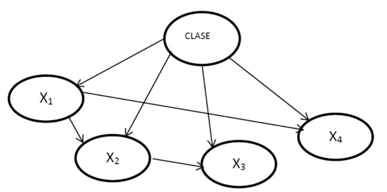
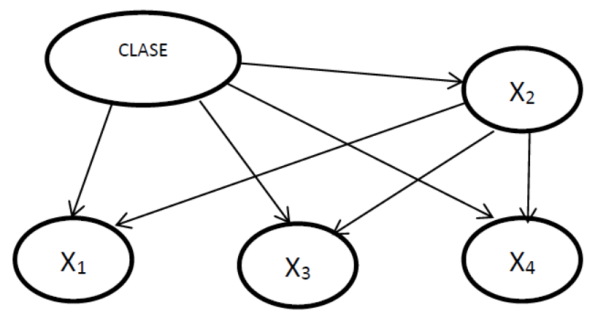
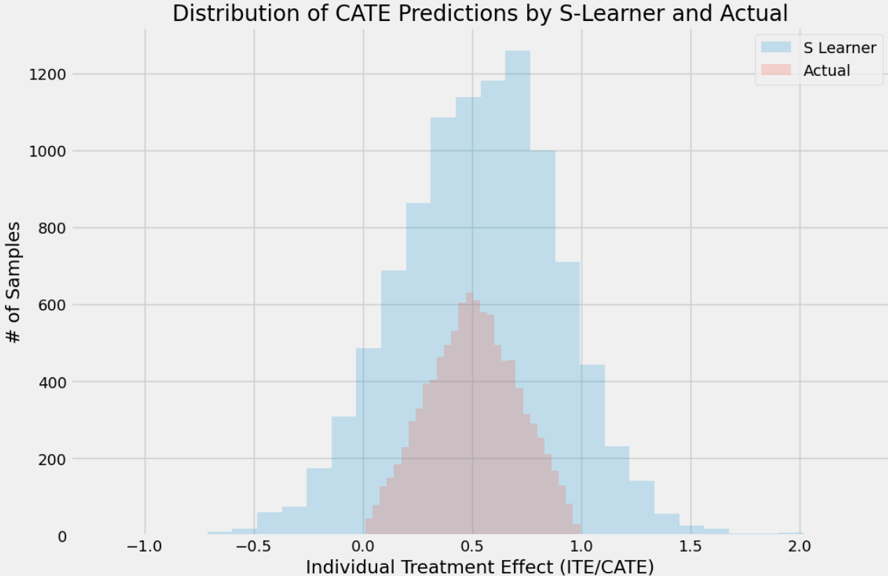
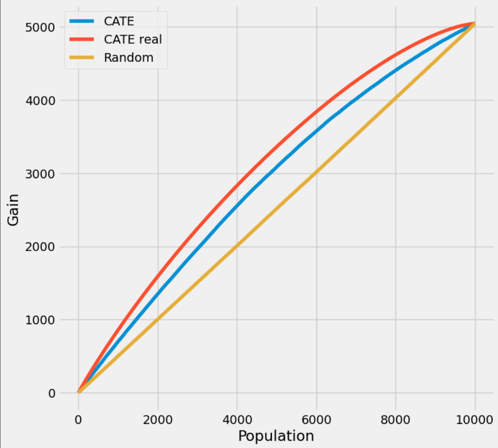

1 Modelos Gráficos Probabilísticos y Análisis Causal
1.1 Redes Bayesianas
Al contrario de la Estadística tradicional, el aprendizaje bajo la Estadística Bayesiana tiene un enfoque probabilístico. Así, el razonamiento bayesiano supone que:
- Las hipótesis están gobernadas por una distribución de probabilidad
- Las decisiones son tomadas de forma “óptima” a partir de las observaciones y dichas probabilidades En este proceso de aprendizaje, las instancias de entrenamiento pueden modificar la probabilidad de una hipótesis, de forma que su planteamiento es mucho menos restrictivo que las técnicas tradicionales (cumplimiento de hipótesis más deterministas). Por tanto, el conocimiento a priori es combinado con las observaciones de los datos con el fin de mejorar el eficiencia de las estimaciones.
Como veremos más adelante, los modelos bayesianos son muy utilizados en todo tipo de investigaciones debido a que proporcionan muy buenos resultados tanto para problemas descriptivos como predictivos:
- Método descriptivo: permite descubrir las relaciones de dependencia/independencia entre las diferentes variables
- Método predictivo: son utilizadas como métodos de clasificación. Entre las características de este tipo de técnicas se pueden citar:
- Permite realizar inferencias sobre los datos, lo que conlleva a inducir modelos probabilísticos
- Facilitar la interpretación de otros métodos en términos probabilísticos
- Se necesita conocer un elevado número de probabilidades
- Elevado coste computacional al realizar la actualización de las probabilidades
Antes de entrar en detalle en la estructura de los métodos bayesianos definir algunos conceptos:
- Arco: es un par ordenado (X, Y). En la representación gráfica, un arco (X,Y) viene dado por una flecha desde X hasta Y.
- Grafo dirigido: es un par G = (N, A) donde N es un conjunto de nodos y A un conjunto de arcos definidos sobre los nodos.
- Grafo no dirigido. Es un par G = (N,A) donde N es un conjunto de nodos y A un conjunto de arcos no orientados (es decir, pares noordenados (X,Y)) definidos sobre los nodos. Ciclo: es un camino no dirigido que empieza y termina en el mismo nodo X.
- Grafo acíclico: es un grafo que no contiene ciclos.
- Padre. X es un padre de Y si y sólo si existe un arco X -> Y. Se dice también que Y es hijo de X. Al conjunto de los padres de X se representa como pa(X), y al de los hijos de X por S(X).
- Antepasado o ascendiente. X es un antepasado o ascendiente de Z si y sólo si existe un camino dirigido de X a Z.
- Descendiente. Z es un descendiente de X si y sólo si X es un antepasado de Z. Al conjunto de los descendientes de X lo denotaremos por de(X). - Variable proposicional es una variable aleatoria que toma un conjunto exhaustivo y excluyente de valores. La denotaremos con letras mayúsculas, por ejemplo X, y a un valor cualquiera de la variable con la misma letra en minúscula, x.
- Dos variables X e Y son independientes si se tiene que P(X/Y) = P(X). De esta definición se tiene una caracterización de la independencia que se puede utilizar como definición alternativa: X e Y son independientes sí y sólo sí P(X,Y) = P(X)·P(Y).
- Dos variables X e Y son independientes dado una tercera variable Z si se tiene que P(X/Y,Z) = P(X/Y). De esta definición se tiene una caracterización de la independencia que se puede utilizar como definición alternativa: X e Y son independientes dado Z sí y sólo sí P(X,Y/Z) = P(X/Z)·P(Y/Z). También se dice que Z separa condicionalmente a X e Y.
1.1.1 Modelo Naive Bayes: Hipótesis Map y Teorema de Bayes
La inferencia bayesiana es el eje central de los métodos bayesianos. Bajo ella, las hipótesis son expresadas a partir de distribuciones de probabilidad formuladas según los datos observados, \(p(\theta)\), donde \(\theta\) son magnitudes desconocidas. La función verosimilitud, \(p(y/\theta)\), contiene la información disponible en los datos en relación a los parámetros y es ésta la que se usa para actualizar la distribución a priori, \(p(\theta)\)). Finalmente, para llevar a cabo dicha actualización se emplea el Teorema de Bayes.
Para entender el del Teorema de Bayes es necesario definir los siguientes conceptos:
- P(h) es la probabilidad a priori de la hipótesis h. Esta probabilidad contiene la información de que dicha hipótesis sea cierta
- P(D) es la probabilidad a priori de D. Esta es la probabilidad de observar los datos D (sin tener en cuenta la hipótesis que ha de ser cumplida)
- P(h/D) es la probabilidad a posteriori de D, es decir, es la probabilidad de que la hipótesis h una vez los datos D son observados.
- P(D/h) es la probabilidad a posteriori de D, es decir, es la probabilidad de que los datos D sean observados una vez la hipótesis h sea correcta.
Sabiendo que la probabilidad conjunta de un evento dado el otro es proporcional a la probabilidad conjunta de ambos ponderada por la probabilidad del evento condicionante, se tiene:
\[ P(h \cap D) = P(h) \cdot P(D \mid h) \]
\[ P(h \cap D) = P(D) \cdot P(h \mid D) \]
Igualando ambas ecuaciones y manipulando los términos se llega el Teorema de Bayes:
\[ P(h \mid D) = \frac{P(h) \cdot P(D \mid h)}{P(D)} \]
De forma que la probabilidad a posteriori se puede determinar a partir de la probabilidad a priori y un factor de corrección.
Para una mejora interpretación del Teorema de Bayes se muestra un ejemplo: >En la sala de Pediatría de un determinado hospital el 60% de los pacientes son niñas. De los niños, se conoce que el 35% tienen menos de 24 meses, mientras que para las niñas el 20% son menores de 24 meses. Un médico selecciona una criatura al azar. Si la criatura tiene menos de 24, ¿cuál es la probabilidad de que sea niña? La tabla siguiente muestra la información que se deduce del enunciado:
La tabla siguiente muestra la información que se deduce del enunciado:
| Probabilidad | Valor |
|---|---|
| P(niño) | 0.40 |
| P(niña) | 0.60 |
| P(<24m / niño) | 0.35 |
| P(<24m / niña) | 0.20 |
Se obtiene la probabilidad total de que la criatura tenga menos de 24 meses
\[ P(<24m) = P(\text{niño}) \cdot P(<24m \mid \text{niño}) + P(\text{niña}) \cdot P(<24m \mid \text{niña}) = 0.4 \cdot 0.35 + 0.6 \cdot 0.2 = 0.26 \]
Aplicando el teorema de Bayes:
\[ P(\text{niña} \mid <24m) = \frac{P(\text{niña}) \cdot P(<24m \mid \text{niña})}{P(<24m)} = \frac{0.6 \cdot 0.2}{0.26} = 0.46 \]
Por tanto, se tiene un 46% de posibilidades de que el médico haya seleccionado a una niña.
A partir de la probabilidad a posteriori obtenida mediante la aplicación del Teorema de Bayes, se está en disposición de maximizar tal expresión; es decir, obtener la hipótesis más probable conocida como hipótesis MAP (o máximo a posteriori):
\[ h_{MAP} = \arg\max_h P(h \mid D) = \arg\max_h [P(h) \cdot P(D \mid h)] \]
Donde se ha tenido en cuenta que P(D) toma el mismo valor en todas las hipótesis.
Supongamos que estamos tratando de predecir si un estudiante aprueba un examen basándonos en dos características: horas de estudio y nivel de preparación. Nuestras hipótesis son:
- \(H_1\): el estudiante aprueba el examen
- \(H_2\): el estudiante no aprueba el examen
Tenemos los siguientes datos:
- \(H_1 = 0.7\): probabilidad de que el estudiante apruebe el examen
- \(H_2 = 0.3\): probabilidad de que el estudiante NO apruebe el examen
- \(P(E\mid H_1) = 0.8\): probabilidad de que el estudiante estudie suficiente si aprueba
- \(P(E\mid H_2) = 0.8\): probabilidad de que el estudiante estudie suficiente si NO aprueba
Ahora supongamos que un estudiante estudia durante 4 horas y está muy bien preparado. Queremos calcular las probabilidades a posteriori de que el estudiante apruebe o no apruebe el examen, y determinar la hipótesis MAP.
- Calculamos la probabilidad marginal de observar las evidencias \(E\):
\[ P(E) = P(E \mid H_1) \times P(H_1) + P(E \mid H_2) \times P(H_2) \]
\[ P(E) = (0.8 \times 0.7) + (0.3 \times 0.3) = 0.56 + 0.09 = 0.65 \]
- Calculamos la probabilidad a posteriori de que el estudiante apruebe el examen (\(H_1\)) dado que las evidencias \(E\) se observan:
\[ P(H_1 \mid E) = \frac{P(E \mid H_1) \times P(H_1)}{P(E)} \]
\[ P(H_1 \mid E) = \frac{0.8 \times 0.7}{0.65} = \frac{0.56}{0.65} \approx 0.861 \]
- Calculamos la probabilidad a posteriori de que el estudiante no apruebe el examen (\(H_2\)) dado que las evidencias \(E\) se observan:
\[ P(H_2 \mid E) = \frac{P(E \mid H_2) \times P(H_2)}{P(E)} \]
\[ P(H_2 \mid E) = \frac{0.3 \times 0.3}{0.65} = \frac{0.09}{0.65} \approx 0.138 \]
Por tanto, la hipótesis más probable es que el estudiante apruebe el examen dado que ha estudiado durante 4 horas y está bien preparado.
Nota: Dado que \(P(E)\) es constante para ambas hipótesis, se podría haber comparado directamente \(P(H_1 \mid E)\) y \(P(H_2 \mid E)\) para determinar la hipótesis MAP.
El uso de la hipótesis MAP puede ser aplicado para resolver problemas de clasificación.
Como sabemos, en dichas investigaciones se tiene una variable independiente conocida como clase o target y un conjunto de variables predictoras o atributos. Así, el Teorema de Bayes se puede reescribir como:
\[ P(C \mid (A_1, A_2, \ldots, A_N)) = \frac{P(C) \cdot P((A_1, A_2, \ldots, A_N) \mid C)}{P(A_1, A_2, \ldots, A_N)} \]
Donde C denota el target o clase y \(A_i\) el conjunto de variables explicativas.
Haciendo máxima la probabilidad de C dado los atributos se tiene:
\[ c_{MAP} = \underset{c \in \Delta}{\arg\max} \ P(C \mid (A_1, A_2, \ldots, A_N)) = P(C) \cdot P((A_1, A_2, \ldots, A_N) \mid C) \]
siendo \(\Delta\) el conjunto de valores que puede tomar la variable objetivo (target del problema).
Como puede verse, el enfoque planteado es bastante sencillo pero también muy costoso desde el punto de vista computacional ya que es necesario conocer las distribuciones de probabilidad de las variables implicadas en la investigación.
1.1.2 Modelo Naive-Bayes
El clasificador Naïve-Bayes es una versión simplificada del proceso de modelización anterior. Este método supone que todos los atributos son independientes conocido el valor de la variable clase de forma que la función de probabilidad conjunta queda como:
\[P(C \mid (A_1, A_2, \ldots, A_N)) = P(C) \cdot \prod_{i=1}^{N} P(A_i \mid C)\]
Como es de esperar, el supuesto que subyace este clasificador no es muy realista; si bien, alcanza muy buenos resultados por lo que su uso está muy extendido en la comunidad de científico de datos.
Como en el caso anterior, se obtiene la hipótesis que maximiza la probabilidad del valor de la clase.
\[c_{MAP} = \underset{c \in \Delta}{\arg\max} \left( P(C) \cdot \prod_{i=1}^{N} P(A_i \mid C) \right)\]
El clasificador Naïve-Bayes puede emplearse tanto con variables explicativas discretas como numéricas.
Cuando las variables explicativas son discretas, la probabilidad condicional es obtenida a partir de la frecuencia de los datos muestrales; de forma que ésta se define como el número de casos favorables entre el número de casos posibles. Matemáticamente, se tiene:
\[P(x_i \mid \text{pa}(x_i)) = \frac{n(x_i, \text{pa}(x_i))}{n(\text{pa}(x_i))}\]
Donde \(n(x_i, Pa(x_i ))\) denota el número de registros de la muestra en el que la variable \(X_i\) toma el valor \(x_i\) y \(pa(x_i )\) los padres de \(X_i\). Notar que el padre de cada variable explicativa es la variable independiente, la cual se ha denominado target o clase.
En el caso en que el tamaño de la muestra de trabajo sea pequeño, el uso de las frecuencias puede ocasionar estimaciones poco fiables por lo que se emplean estimadores basados en suavizados. Uno de los más empleados es el estimador de Laplace en el que la probabilidad viene expresada por el número de casos favorables + 1 dividida por el de casos totales más el número de alternativas.
\[P(x_i \mid \text{Pa}(x_i)) = \frac{n(x_i, \text{pa}(x_i)) + 1}{n(\text{pa}(x_i)) + \alpha}\]
Por su parte, si se dispone de variables numéricas el estimador Naïve-Bayes supone que dichas variables siguen una distribución normal donde la media y la desviación típica son estimadas a partir de los datos de la muestra. Sin embargo, en la mayor parte de las ocasionales, las variables continuas no suelen seguir una distribución de probabilidad normal es posible que las estimaciones sean poco eficientes por lo que se recomienda transformar dichas variables en cualitativas (por ejemplo: empleando los intervalos que se obtienen al tomar los cuantiles de su distribución).
import os
import numpy as np
import pandas as pd
datos = pd.read_csv("../datos/credit_g.csv")
datos.info()# Pasamos las variables a categóricas
datos['checking_status'] = datos['checking_status'].astype('category')
datos['credit_history'] = datos['credit_history'].astype('category')
datos['purpose'] = datos['purpose'].astype('category')
datos['savings_status'] = datos['savings_status'].astype('category')
datos['employment'] = datos['employment'].astype('category')
datos['personal_status'] = datos['personal_status'].astype('category')
datos['other_parties'] = datos['other_parties'].astype('category')
datos['property_magnitude'] = datos['property_magnitude'].astype('category')
datos['other_payment_plans'] = datos['other_payment_plans'].astype('category')
datos['housing'] = datos['housing'].astype('category')
datos['job'] = datos['job'].astype('category')
datos['property_magnitude'] = datos['property_magnitude'].astype('category')
datos['own_telephone'] = datos['own_telephone'].astype('category')
datos['foreign_worker'] = datos['foreign_worker'].astype('category')
datos['class'] = datos['class'].astype('category')# La variable class es una variable reservada en diferentes módulos de Python -> reemplazar por por target
datos.rename(columns={'class': 'target'}, inplace=True)
datos['target']=np.where(datos['target']=='good', 0, 1) # cambio en la codificación por sencillez en el preprocesado# Definición de la muestra de trabajo
datos_entrada = datos.drop('target', axis=1) # Datos de entrada
datos_entrada = pd.get_dummies(datos_entrada, drop_first=True, dtype=int) #conversión a variables dummy
target = datos["target"] # muestra del targetfrom sklearn.preprocessing import StandardScaler
from sklearn.model_selection import train_test_split, RepeatedStratifiedKFold, GridSearchCV
# Partición de la muestra
test_size = 0.3 # muestra para el test
seed = 222 # semilla
X_train, X_test, y_train, y_test = train_test_split(
datos_entrada, target, test_size=test_size, random_state=seed, stratify=target
)
# Estandarización de la muestra
esc = StandardScaler().fit(X_train) # valores media y std de los datos de train
# aplicación a los datos de train y test
X_train_esc = esc.transform(X_train)
X_test_esc = esc.transform(X_test)
# Validación cruczada
cv = RepeatedStratifiedKFold(n_splits=10, n_repeats=2, random_state=seed)1.1.2.1 Bernoulli Naive Bayes
from sklearn.naive_bayes import BernoulliNB
bernoulli_nb=BernoulliNB(force_alpha=False)
grid=[{'alpha': list(np.arange(0.05, 1, 0.1)), 'binarize': [0.3, 0.1, 0.0]}]# Definición del modelo con hiperparámetros
gs_bernoulli_nb = GridSearchCV(
estimator=bernoulli_nb, param_grid=grid, scoring='accuracy', cv=cv, n_jobs=1, return_train_score=False
)
gs_bernoulli_nb = gs_bernoulli_nb.fit(X_train, y_train)
print(f'Naive-Bayes (Bernoulli) (parámetros): {gs_bernoulli_nb.best_params_}') # parámetros del modelo final
bernoulli_nb = gs_bernoulli_nb.best_estimator_ # modelo final# Resultados importantes de estos algoritmos (acceso dentro del objeto del modelo)
print(bernoulli_nb.class_log_prior_) # logaritmo de la probabilidad de cada clase
print(bernoulli_nb.class_log_prior_) # logaritmo de la probabilidad de cada clase
bernoulli_nb.feature_log_prob_ # logaritmo de la probabilidad de la variable dada la clase (P(Xi|Y)import seaborn as sns
import matplotlib.pyplot as plt
from sklearn.metrics import accuracy_score, roc_curve, auc, confusion_matrix
import warnings
# Suprimir todas las advertencias
warnings.simplefilter("ignore")
# Predicciones muestra entrenamiento y test
preds_train = bernoulli_nb.predict(X_train)
preds_test = bernoulli_nb.predict(X_test)
# Cálculo métricas bondad de ajuste
print('Accuracy')
print('------------------------------')
print(f'Entrenamiento (cv): {round(gs_bernoulli_nb.best_score_,5)}')
accuracy_test = accuracy_score(y_test, preds_test)
print(f'Test: {round(accuracy_test,5)}')
# AUC - test y curva roc (final
y_pred_test = bernoulli_nb.predict_proba(X_test)
fp_rate_test, tp_rate_test, thresholds = roc_curve(y_test, y_pred_test[:,1])
auc_test = auc(fp_rate_test, tp_rate_test)
# Bondad de ajuste: matriz de confusión y curva roc para los datos de test
f, axes = plt.subplots(1, 2, figsize=(10,5))
sns.heatmap(confusion_matrix(preds_test, y_test), annot = True, cmap = plt.cm.Reds, fmt='.0f', ax=axes[0]) # matriz de confusión
sns.lineplot(x=fp_rate_test, y=tp_rate_test, color='skyblue', label='AUC = %0.2f' % auc_test, ax=axes[1]) # curva roc
plt.legend(loc="lower right")
plt.show()1.1.2.2 Gaussian Naive Bayes
from sklearn.naive_bayes import GaussianNB
gaussian_nb = GaussianNB()
grid=[{'var_smoothing': list(np.arange(0,0.1, 0.02))}]
# Definición del modelo con hiperparámetros
gs_gaussian_nb=GridSearchCV(
estimator=gaussian_nb, param_grid=grid, scoring='accuracy', cv=cv, n_jobs=1, return_train_score=False
)
gs_gaussian_nb = gs_gaussian_nb.fit(X_train, y_train)
print('Naive-Bayes (Bernoulli) (parámetros):', gs_gaussian_nb.best_params_)
#parámetros del modelo final
gaussian_nb = gs_gaussian_nb.best_estimator_ #modelo final
# predicciones muestra entrenamiento y test
preds_train = gaussian_nb.predict(X_train)
preds_test = gaussian_nb.predict(X_test)
# Cálculo métricas bondad de ajuste
print('Accuracy')
print('------------------------------')
print(f'Entrenamiento (cv):, {round(gs_gaussian_nb.best_score_,5)}')
accuracy_test = accuracy_score(y_test, preds_test)
print('Test:', round(accuracy_test,5))
#AUC - test y curva roc (final)
y_pred_test = gaussian_nb.predict_proba(X_test)
fp_rate_test, tp_rate_test, thresholds = roc_curve(y_test, y_pred_test[:,1])
auc_test = auc(fp_rate_test, tp_rate_test)
# Bondad de ajuste: matriz de confusión y curva roc para los datos de test
f, axes = plt.subplots(1, 2, figsize=(10,5))
sns.heatmap(confusion_matrix(preds_test, y_test), annot = True, cmap = plt.cm.Reds, fmt='.0f', ax=axes[0]) # matriz de confusión
sns.lineplot(x=fp_rate_test, y=tp_rate_test, color='skyblue', label='AUC = %0.2f' % auc_test, ax=axes[1]) # curva roc
plt.legend(loc="lower right")
plt.show()1.2 Modelos Bayesianos
Las redes bayesianas son métodos estadísticos que representan la incertidumbre a través de las relaciones de independencia condicional que se establecen entre ellas. Por tanto, permiten modelar un fenómeno a partir de dichas relaciones y hacer inferencia.
Este tipo de métodos son una representación gráfica de dependencias para razonamiento probabilístico, en las que los nodos representan variables aleatorias y los arcos las relaciones de dependencia directa entre las variables.
La ventaja de las redes bayesianas frente a otros métodos es la posibilidad de codificar las dependencias/independencias relevantes considerando no sólo las dependencias marginales sino también las dependencias condicionales entre un conjunto de variables.
En definitiva, las redes bayesianas modelan las relaciones entre las variables tanto de forma cualitativa como cuantitativa. La fuerza de dichas relaciones viene dada en las distribuciones de probabilidad como una medida de la creencia que tenemos sobre esas relaciones en el modelo.
1.2.1 Formulación general
Una red bayesiana queda especificada formalmente por una dupla B=(G,Θ) donde G es un grafo dirigido acíclico (DAG, por las siglas en inglés) y Θ es el conjunto de distribuciones de probabilidad. Definimos un grafo como un par G = (V, E), donde V es un conjunto finito de vértices, nodos o variables, y E es un subconjunto del producto cartesiano VxV de pares ordenados de nodos que llamamos enlaces o aristas. Por tanto, puede decirse que las redes bayesianas representan el conocimiento cualitativo del modelo mediante el grafo dirigido acíclico.
Supongamos una red bayesiana que contine un padre A y 3 hijos (B, C y D), siendo C también padre de B. El DAG que definido sería:
import bnlearn as bn
import matplotlib.pyplot as plt
edges = [('A', 'B'), ('A', 'C'), ('A', 'D'), ('C', 'B')]
DAG = bn.make_DAG(edges, methodtype="bayes")
bn.plot(DAG, interactive=False)
plt.show()
# print(DAG["adjmat"]) # podemos ver el dag en formato tabla (no visual cuando existen muchos nodos)El grafo define un modelo probabilístico mediante el producto de varias funciones de probabilidad condicionada:
\[P(x_1, \ldots, x_n) = \prod_{i=1}^{N} P(x_i \mid \text{pa}(x_i))\]
Con \(pa(x_i)\) las variables inmediatamente predecesoras de la variable \(X_i\). En este sentido, los valores de probabilidades \(P(x_i⁄pa(x_i ))\) son “almacenados” en el nodo que precede a la variable \(X_i\).
Es importante resaltar que de no existir la expresión anterior, la red debiese ser descrita a partir de la probabilidad conjunta, lo que obligaría a trabajar con un número de parámetros mucho más elevado (creciente de forma exponencial en el número de nodos).
1.2.2 Independencia condicional e inferencia de la red
Como se ha comentado anteriormente, una variable X es condicionalmente independiente de otra variable Y dada una tercera Z si, el hecho de que se tenga conocimiento Z, hace que Y no tenga influencia en X.
\[P(X|Y,Z)=P(X|Z)\]
Por tanto, la hipótesis de independencia condicional establece que cada nodo debe ser independiente de los otros nodos de la red (salvo sus descendientes) dados sus padres. Dicho de otro modo, si se conocen los padres de una variable, ésta se vuelve independiente del resto de sus predecesores.
Veamos un ejemplo para facilitar la comprensión de la independencia condicional.
\[\begin{align} P(X_1, X_2, \ldots, X_9) &= P(X_1) \cdot P(X_2) \cdot P(X_3 \mid X_2, X_1) \cdot P(X_4 \mid X_3, X_2, X_1) \\ &\quad \cdot P(X_5 \mid X_4, X_3, X_2, X_1) \cdot P(X_6 \mid X_5, X_4, X_3, X_2, X_1) \\ &\quad \cdot P(X_7 \mid X_6, X_5, X_4, X_3, X_2, X_1) \\ &\quad \cdot P(X_8 \mid X_7, X_6, X_5, X_4, X_3, X_2, X_1) \\ &\quad \cdot P(X_9 \mid X_8, X_7, X_6, X_5, X_4, X_3, X_2, X_1) \end{align}\]Partiendo de la red bayesiana de la imagen anterior, la probabilidad conjunta se define como:
\[\begin{align} P(X_1, X_2, \ldots, X_9) &= P(X_1) \cdot P(X_2) \cdot P(X_3 \mid X_2) \cdot P(X_4 \mid X_2, X_1) \\ &\quad \cdot P(X_5 \mid X_4) \cdot P(X_6 \mid X_4) \cdot P(X_7 \mid X_4) \\ &\quad \cdot P(X_8 \mid X_3) \cdot P(X_9 \mid X_3) \end{align}\]En cambio, como las probabilidades condicionales solo dependen de sus padres (teorema anterior), la probabilidad conjunta toma la siguiente forma:
Por tanto, *la propiedad de independencia de las redes bayesianas hace que se reduzca en gran medida los cálculos**.
En una red bayesiana, se conoce como inferencia probabilística a la propagación del conocimiento a través de la misma una vez se tienen nuevos datos. Este proceso se lleva a cabo actualizando las probabilidades a posteriori en toda la estructura de la red mediante el Teorema de Bayes.
Como es de imaginar, el proceso de inferencia es muy costoso computacionalmente de forma que, dependiendo de las necesidades, se emplean algoritmos exactos o aproximados:
- Exactos: cuando puede calcularse la inferencia de forma exacta. El coste computacional necesario para la actualización de las probabilidades es viable
- Aproximados: se usan técnicas de muestreo que permita calcular de forma aproximada la inferencia. Usado cuando no es viable obtener la propagación exacta en un tiempo razonable
1.2.3 Aprendizaje de las redes bayesianas
Como se ha visto, para determinar una red bayesiana es necesario especificar su estructura gráfica y una función de probabilidad conjunta. Dicho proceso es bastante laborioso debido a que, en muchos casos, se desconoce ambas especificaciones. Para paliar esta circunstancia, se han desarrollado diferentes métodos de aprendizaje. Así, el proceso de aprendizaje de una red bayesiana puede dividirse en dos estapas:
- Estructural (o dimensión cualitativa): búsqueda en el espacio de posibles redes
- Paramétrico (o dimensión cuantitativa): aprende la distribución de probabilidad a partir de los datos, dada la red
El aprendizaje paramétrico consiste en hallar los parámetros asociados a la estructura de la red. Estos parámetros están constituidos por las probabilidades de los nodos raíz y las probabilidades condicionales de las demás variables dados sus padres. Las probabilidades previas se corresponden con las marginales de los nodos raíz y las condicionales se obtienen de las distribuciones de cada nodo con sus padres.
En el aprendizaje estructural es donde se establecen las relaciones de dependencia que existen entre las variables del conjunto de datos para obtener el mejor grafo que represente estas relaciones. Este problema se hace prácticamente intratable desde el punto de vista computacional cuando el número de variables es grande. Por ello, suelen emplearse algoritmos de búsqueda para aprender la estructura de la red.
A continuación, se presentan algunos algoritmos de búsqueda para establecer la estructura de una red bayesiana.
Algoritmo K2
El algoritmo K2 es considerado el predecesor de otros algoritmos de búsqueda más sofisticados. basado en búsqueda y optimización de una métrica bayesiana es considerado como el predecesor y fuente de inspiración para las generaciones posteriores. El proceso de búsqueda de este algoritmo está dividido en las siguientes etapas: - Ordenación de los nodos (variables de entrada) de forma que los posibles padres de una variable aparezcan siempre antes de ella para evitar la generación de ciclos. Esta restricción provoca que el algoritmo busque los padres posibles entre las variables predecesoras (ventaja computacional) - Partiendo de este orden establecido, se calcula la ganancia que se produce en la medida al introducir una variable como padre
Finalmente, el proceso se repite para cada nodo mientras el incremento de calidad supere un cierto umbral preestablecido.
Algoritmo B
Este algoritmo elimina la dependencia de la ordenación previa de los nodos de forma que su coste de computación es superior al algoritmo K2. complejidad computacional es mayor. Como en el caso anterior, el proceso es iniciado con padres vacíos con padres vacíos y en cada etapa se añade aquel enlace que maximice el incremento de calidad eliminando aquellos que producen ciclos. El proceso es detenido cuando una vez la inclusión de un arco no represente ninguna ganancia.
Algoritmo Hill Climbing
El algoritmo Hill Climbing (HC) es un procedimiento de búsqueda que parte de una solución inicial y, a partir de ésta, mediante técnicas heurística se calcula el nuevo valor utilizando todas las soluciones vecinas a la solución actual, seleccionando el vecino que mejor solución presenta. Por tanto, este algoritmo finaliza cuando no existe ningún vecino que pueda mejorar la solución vecina.
Una variante muy útil y muy empleada consiste en considerar todos los posibles movimientos a partir del estado actual y elegir el mejor de ellos como nuevo estado. A este método se le denomina ascensión por la máxima pendiente o búsqueda del gradiente.
Vamos a mostrar un ejemplo de aprendizaje de la estructura en python:
import pandas as pd
datos = pd.read_csv("../datos/bayesian_data.csv", sep=";", index_col="Unnamed: 0")
datos = datos.rename(columns={'class': 'target'}) # target con 4 categorías
# Modelo de estructura
structure_model = bn.structure_learning.fit(datos, methodtype='tan', root_node="doors", class_node="target") # uso de hill-climbing
# nota: en este caso no estamos definiendo un padre para obtener la estructura bayesianTanto del cuadro como del grafo, podemos ver que:
targetes padre de:safety,lug_bootypersontargetes hijo de:buyingymaint
1.2.4 Clasificadores
Como determinar la estructura de la red bayesiana es una tarea realmente compleja, la mayor parte de los modelos de clasificación basados en redes bayesianas suelen ser modificaciones del clasificador Naïve-Bayes.
A día de hoy, existen muchos clasificadores de forma que se exponen brevemente tres de los más utilizados.
Tan: Tree Augmented Naïve Bayes
En el modelo TAN todos los atributos tienen como padre a otro atributo como mucho, además de la clase en sí, de forma que cada atributo obtiene un arco aumentado apuntando a él. 
Ban: Naïve Bayes aumentado
En este modelo se incorporan nuevos arcos entre todas las variables con la limitación de que no formen ciclos. Destacar la relevancia de este clasificador ya que su estructura es capaz de representar cualquier forma de red bayesiana.
AODE: Average One-Dependence Estimators
Al igual que el algoritmo TAN, cada variable tiene como padre a la variable clase y como máximo a otro atributo. Sin embargo, la principal diferencia respecto al modelo anterior tiene lugar en la forma de obtener la predicción definitiva del modelo. Dicha predicción consiste en: - El algoritmo establece posibles estructuras de red compatibles con el problema y, en función de ésta, hace una predicción de la clase - La predicción final se obtiene como la media ponderada de las predicciones anteriores 
Una vez visto la parte teórica entramos en detalle a nivel práctico.
structure_tan_model = bn.structure_learning.fit(
datos,
methodtype='tan',
root_node="doors", # hay que tener en cuenta algún hijo que no tenga más padre que el target
class_node="target" # en el modelo tan hay que tener una clase/padre)
)
parameter_model = bn.parameter_learning.fit(structure_tan_model, datos, methodtype='bayes', verbose=0) structure_tan_model["model_edges"] # bordes y nodos. También podría pintarse como en el caso anterior- Obención de las
probabilidades condicionadas
# Probabilidades condicionadas
CPDs = bn.print_CPD(parameter_model, verbose=0) # esto es un diccionario de dataframes (clave cada columna del df- Para doors:- Para maint (y primera clase del target):Obtención de las Predicciones sobre la muestra
feats = list(datos.columns)
feats.remove("target")
# dado las evidencias de dos variables, calculamos la probabilidad de la clase
query = bn.inference.fit(parameter_model, variables=["target"], evidence={'doors':2, 'lug_boot': 'small'}, verbose=0)
query.dfPor último, presentamos un ejemplo de uso de clasificador bayesiano empleando la librería pyAgrum. Esta librería es que es un contenedor de Python para la biblioteca aGrUM de C++. Proporciona una interfaz de alto nivel a la parte de aGrUM que permite crear, modelar, aprender, usar, calcular e integrar redes bayesianas y otros modelos gráficos probabilísticos como las redes de Markov o los modelos relacionales probabilísticos.
La librería se integra adecuadamente con scikit-learn por lo que se recomienda su uso para desarrollar clasificadores bayesianos.
import os
import pandas as pd
import numpy as np
import pyAgrum.skbn as skbn
import pyAgrum.lib.notebook as gnb
datos = pd.read_csv("../datos/credit_g.csv")
datos.info()# Pasamos las variables a categóricas
datos['checking_status'] = datos['checking_status'].astype('category')
datos['credit_history'] = datos['credit_history'].astype('category')
datos['purpose'] = datos['purpose'].astype('category')
datos['savings_status'] = datos['savings_status'].astype('category')
datos['employment'] = datos['employment'].astype('category')
datos['personal_status'] = datos['personal_status'].astype('category')
datos['other_parties'] = datos['other_parties'].astype('category')
datos['property_magnitude'] = datos['property_magnitude'].astype('category')
datos['other_payment_plans'] = datos['other_payment_plans'].astype('category')
datos['housing'] = datos['housing'].astype('category')
datos['job'] = datos['job'].astype('category')
datos['property_magnitude'] = datos['property_magnitude'].astype('category')
datos['own_telephone'] = datos['own_telephone'].astype('category')
datos['foreign_worker'] = datos['foreign_worker'].astype('category')
datos['class'] = datos['class'].astype('category')
# La variable class es una variable reservada en diferentes módulos de Python -> reemplazar por por target
datos.rename(columns={'class': 'target'}, inplace=True)
datos['target']=np.where(datos['target']=='good', 0, 1) # cambio en la codificación por sencillez en el preprocesado
# Definición de la muestra de trabajo
datos_entrada = datos.drop('target', axis=1) # Datos de entrada
datos_entrada = pd.get_dummies(datos_entrada, drop_first=True, dtype=int) #conversión a variables dummy
target = datos["target"] # muestra del target
from sklearn.preprocessing import StandardScaler
from sklearn.model_selection import train_test_split, RepeatedStratifiedKFold, GridSearchCV
# Partición de la muestra
test_size = 0.3 # muestra para el test
seed = 222 # semilla
X_train, X_test, y_train, y_test = train_test_split(
datos_entrada, target, test_size=test_size, random_state=seed, stratify=target
)
# Estandarización de la muestra
esc = StandardScaler().fit(X_train) # valores media y std de los datos de train
# aplicación a los datos de train y test
X_train_esc = esc.transform(X_train)
X_test_esc = esc.transform(X_test)# Creación del clasificador TAN en python
bayesian_network = skbn.BNClassifier(
learningMethod='TAN',
prior='Smoothing',
scoringType='BIC',
priorWeight=0.5,
discretizationStrategy='quantile',
usePR=True,
significant_digit = 6
)
bayesian_network.fit(X_train, y_train) # ajuste del modelofrom sklearn.metrics import accuracy_score
# predicciones para la muestra de train y test
train_probs = bn.predict_proba(X_train)
test_probs = bn.predict_proba(X_test)
# predict-proba proporciona las probabilidades
def preds_ones(probs, threshold = 0.5):
return np.where(probs[:, 0] > threshold, 0, 1)
y_train_pred = preds_ones(train_probs)
y_test_pred = preds_ones(tests_probs)
print(f'Accuracy (train) {round(accuracy_score(y_train, y_train_pred),2)}')
print(f'Accuracy (test) {round(accuracy_score(y_test, y_test_pred), 2)}')1.3 Modelos Ocultos de Markov
1.3.1 Cadenas de Markov
Una cadena de Markov es un sistema matemático que experimenta transiciones de un estado a otro de acuerdo con un conjunto dado de reglas probabilísticas. La siguiente imagen presenta una representación gráfica de una cadena de Markov.
Como puede verse, una cadena de Markov puede ser planteada como un gráfico dirigido en el que los nodos son los estados y los arcos contienen la probabilidad de pasar de un estado a otro.
Las cadenas de Markov son procesos estocásticos pero se diferencian en que carecen de memoria. Así, en un proceso de Markov la probabilidad del siguiente estado del sistema depende solamente del estado actual del sistema y no de ningún estado anterior.
\[P(x_i│x_0 … x_{i-1})= P(x_i│x_{i-1})\]
La expresión anterior se conoce como propiedad de Markov.
Es importante destacar que una cadena de Markov puede ser vista como una red bayesiana en la que cada nodo tiene una tabla de probabilidad correspondiente a \(P(x_t│x_{t-1})\) y es a misma para todos los nodos salvo para el instante inicial.
En toda cadena de Markov es necesario definir una matriz de transición, T, la cual contiene la información sobre la probabilidad de transición entre los diferentes estados del sistema. Como hecho relevante, cada fila de la matriz debe ser un vector de probabilidad y la suma de todos sus términos debe ser igual a la unidad.
Asimismo, las matrices de transición tienen la propiedad de que el producto de las matrices posteriores puede describir las probabilidades de transición a lo largo de un intervalo de tiempo. Esta característica permite modelar la probabilidad de estar en un determinado estado después de n pasos como:
\[p^n= p^0* T^n\]
Veamos un ejemplo con el que facilitar la comprensión del funcionamiento de una cadena de Markov.
Un grupo farmacéutico ha sacado al mercado tres pomadas hace pocas semanas. Con el fin de conocer su acogida así como el comportamiento futuro de los potenciales clientes ante las tres variantes del producto ha realizado un estudio de mercado. De dicho estudio se conocen las probabilidades de cambio de un tipo de pomada a otra.
La matriz de transición para T es:
\[ T = \begin{pmatrix} 0.80 & 0.10 & 0.10 \\ 0.03 & 0.95 & 0.02 \\ 0.20 & 0.05 & 0.75 \\ \end{pmatrix} \]
Sabiendo que actualmente, la participación en el mercado de las tres pomadas es:
\[ p = \begin{pmatrix} 0.30 \\ 0.45 \\ 0.25 \\ \end{pmatrix} \]
¿Cuáles serán las participaciones de mercado de cada marca en dos meses más?
La matriz de transición para \(T^2\) es:
\[ T^2 = \begin{pmatrix} 0.663 & 0.180 & 0.155 \\ 0.057 & 0.907 & 0.037 \\ 0.312 & 0.105 & 0.584 \\ \end{pmatrix} \]
De forma que usando la fórmula anterior, se tiene:
\[ p^2 = p^0 \cdot T^2 = \begin{pmatrix} 0.30 & 0.45 & 0.25 \end{pmatrix} \begin{pmatrix} 0.663 & 0.180 & 0.155 \\ 0.057 & 0.907 & 0.037 \\ 0.312 & 0.105 & 0.584 \\ \end{pmatrix} = \begin{pmatrix} 0.302 & 0.488 & 0.209 \end{pmatrix} \]
En vista de los resultados, la cuota de mercado de cada tipo de pomada variará en los dos meses siguientes en: - Pomada 1: de un 30% a 30,2% (estable) - Pomada 2: de un 45% a un 48,8% (leve aumento) - Pomada 3: de un 25% a un 20,9% (ligera caída)
1.3.2 Cadena de Markov absorvente
Una cadena de Markov absorbente es una cadena de Markov en la que para algunos estados una vez ingresados, no es posible salir. Sin embargo, este es solo uno de los requisitos previos para que una cadena de Markov sea una cadena de Markov absorbente. Para que sea una cadena de Markov absorbente, todos los demás estados transitorios deben poder alcanzar el estado absorbente con una probabilidad de 1.
Con el fin de ayudar al entendimiento del comportamiento de una cadena de Markov arbsorvente, se plantea una simulación en python sobre la calidad creditia de n individuos y su comportamiento durante un año (12 pagos).
Suponiendo un modelo de impago bancario con los siguientes tres estados: - Pago al día - Pago con retraso - Impago (estado absorbente)
Así, la matriz de transición para esta cadena de Markov es:
\[ T = \begin{pmatrix} 0.8 & 0.1 & 0.0 \\ 0.2 & 0.4 & 0.4 \\ 0.0 & 0.0 & 1.0 \\ \end{pmatrix} \]
Esto significa que hay un 80% de probabilidad de que un individuo que paga al día continúe pagando al día, un 20% de probabilidad de que pase a un estado de pago con retraso, y un 0% de probabilidad de que entre en estado de impago (para pasar a impago debe pasar previamente por pago con retraso). Además, hay un 20% de probabilidad de que un individuo en estado de pago con retraso vuelva al estado de pago al día, un 40% de probabilidad de que permanezca en estado de pago con retraso y un 20% de probabilidad de que entre en estado de impago. Por último, el estado de impago es absorbente, lo que significa que una vez que un individuo entra en estado de impago, permanece allí indefinidamente.
import numpy as np
np.random.seed(123)
# Matriz de transición completa
transition_matrix = np.array([[0.8, 0.2, 0.0], # De pago al día a pago con retraso o impago
[0.45, 0.4, 0.15], # De pago con retraso a pago al día o impago
[0.0, 0.0, 1.0]]) # De impago a impago (estado de absorción)
# Muestra de individuos + número de pagos
n_samples = 10
n_pagos = 12
y = np.zeros(n_samples, dtype=int) # Todos los individuos comienzan en estado de pago al día
muestra_dict = {} # Diccionario para recoger los pagos de cada muestra
for i in range(n_samples):
# Generar transiciones de estado basadas en la matriz de transición completa
current_state = 0 # Estado inicial: pago al día
pagos_muestra_list = [] # Obtener secuencia en cada mes de pago
for _ in range(n_pagos): # Realizar los 12 pagos
if current_state == 0: # Si estamos en el estado de pago al día
# solo nos quedamos con las posibles transiciones (no es posible ir al impago sin tener retraso en pago)
next_state = np.random.choice([0, 1], p=transition_matrix[current_state][0:2])
elif current_state == 1: # Si estamos en el estado de pago con retraso
# una vez estamos en retraso pago podemos volver a regular pagos (pago al día) o ir a impoago
next_state = np.random.choice([0, 1, 2], p=transition_matrix[current_state])
else: # Si estamos en el estado de impago
y[i] = 1 # estado absorbente
break
current_state = next_state
pagos_muestra_list.append(current_state)
muestra_dict[f"Individuo_{i}"] = pagos_muestra_listEn el diccionario muestra_dict se ha guardado el comportamiento de cada individuo a lo largo de los 12 pagos posteriores al punto inicial.
Como puede verse, la mayor parte de individuos no llegan al estado de impago y esto es consecuencia de las probabilidades existentes en la matriz de transición de partida.
La secuencia de pagos del Individuo_5 hace que sea de interés focalizarse en él para detallar el impacto que tienen las cadenas de markov. Como puede verse, al inicio de pago se empieza a retrasar hasta volver a regularizar sus pagos a mediados del segundo trimestre. Tras esta regularización, meses después vuelve a caer de estado.
Las cadenas de Markov absorbentes tienen algunas propiedades específicas que las diferencian de las cadenas de Markov más simples. La más destacada es la referida a la forma en que la matriz de transición puede ser escrita. Sea una cadena con t estados transitorios y r estados absorbentes, la matriz de transición T puede escribirse en su forma canónica como:
\[ T = \begin{pmatrix} Q & R \\ 0 & I_t \\ \end{pmatrix} \]
Donde Q es una matriz de txt, R es una matriz de txr, 0 es una matriz de ceros de rxt e It es la matriz identidad de txt.
En particular, la descomposición de la matriz de transición en la matriz fundamental permite ciertos cálculos, como el número esperado de pasos hasta la absorción de cada estado. La matriz fundamental N se calcula de la siguiente manera:
\[ N= (I_t-Q)^{-1} \]
Siendo I_t es la matriz identidad de txt. Así, para obtener el número esperado de pasos se calcula como:
\[ n= N*1 \]
Donde 1 denota un vector columna de valor uno y longitud igual al número estados transitorios.
Por último, la probabilidad de que un estado transitorio sea absorbido es calculada como:
\[ p_{trans \rightarrow abs}= N * R \]
Veamos un ejemplo de Cadena de Markov absorbente con el que podamos ver en detalle estos cálculos matriciales:
Imaginemos un cliente en un casino. Por cada apuesta gana 1€ con probabilidad de 0.3 o pierde 1€ con probabilidad de 0.7. Sabiendo que la apuesta ha sido iniciada con 2 € y que el cliente se retirará se retirará si pierde todo el dinero o bien lo duplica. Se pide:
- Cuestión 1: Escribir la matriz de transición de una cadena de Markov
- Cuestión 2: Determinar el promedio de apuestas hasta que el juego termina
- Cuestión 3: Determinar la probabilidad de terminar el juego con 4€ o de marcharse de vacío
Cuestión 1: Del enunciado se conoce que se tienen 5 posibles estados (0, 1, 2, 3, 4) siendo los estados 0 y 4 absorbentes (pierde todo o duplica la apuesta, respectivamente). Teniendo en cuenta los posibles movimientos y las probabilidades asociadas se tiene:
\[ T = \begin{pmatrix} t_{00} & t_{01} & t_{02} & t_{03} & t_{04} \\ t_{10} & t_{11} & t_{12} & t_{13} & t_{14} \\ t_{20} & t_{21} & t_{22} & t_{23} & t_{24} \\ t_{30} & t_{31} & t_{32} & t_{33} & t_{34} \\ t_{40} & t_{41} & t_{42} & t_{43} & t_{44} \\ \end{pmatrix} = \begin{pmatrix} 1 & 0 & 0 & 0 & 0 \\ 0.7 & 0 & 0.3 & 0 & 0 \\ 0 & 0.7 & 0 & 0.3 & 0 \\ 0 & 0 & 0.7 & 0 & 0.3 \\ 0 & 0 & 0 & 0 & 1 \\ \end{pmatrix} \]
Cuestión 2: Se escribe la matriz T en su forma canónica. Notar que para ello es necesario reorganizar los estados (ahora, los estados absorbentes están en las últimas filas de la matriz T).
\[ T = \begin{pmatrix} Q & R \\ 0 & I_t \\ \end{pmatrix} = \begin{pmatrix} t_{11} & t_{12} & t_{13} & t_{10} & t_{14} \\ t_{21} & t_{22} & t_{23} & t_{20} & t_{24} \\ t_{31} & t_{32} & t_{33} & t_{30} & t_{34} \\ t_{01} & t_{02} & t_{03} & t_{00} & t_{04} \\ t_{41} & t_{42} & t_{43} & t_{40} & t_{44} \\ \end{pmatrix} = \begin{pmatrix} 0 & 0.3 & 0 & 0.7 & 0 \\ 0.7 & 0 & 0.3 & 0 & 0 \\ 0 & 0.7 & 0 & 0 & 0.3 \\ 0 & 0 & 0 & 1 & 0 \\ 0 & 0 & 0 & 0 & 1 \\ \end{pmatrix} \]
De forma que Q y R son:
\[ Q = \begin{pmatrix} 0.0 & 0.3 & 0.0 \\ 0.7 & 0.0 & 0.3 \\ 0.0 & 0.7 & 0.0 \end{pmatrix} \] \[ R = \begin{pmatrix} 0.7 & 0.0 \\ 0.0 & 0.0 \\ 0.0 & 0.3 \end{pmatrix} \]
El número de apuestas hasta terminar el juego es:
\[ N= (I_t-Q)^{-1} * 1 = {\begin{pmatrix} 0.0 & 0.3 & 0.0 \\ 0.7 & 0.0 & 0.3 \\ 0.0 & 0.7 & 0.0 \end{pmatrix}}^{-1} * \begin{pmatrix} 1 \\ 1 \\ 1 \end{pmatrix} = \begin{pmatrix} 1.362 & 0.517 & 0.155 \\ 1.207 & 1.724 & 0.517 \\ 0.845 & 1.207 & 1.362 \end{pmatrix} * \begin{pmatrix} 1 \\ 1 \\ 1 \end{pmatrix} = \begin{pmatrix} 2.034 \\ 3.448 \\ 3.414 \end{pmatrix} \]
Teniendo en cuenta que el cliente empezó su apuesta con 2€, el número de apuestas esperadas hasta que el juego acabe son 3.448€.
Cuestión 3: En este caso, se sabe que la probabilidad de llegar a un estado absorbente desde uno transitorio sigue la siguiente expresión:
\[ p_{trans \rightarrow abs}= N * R = (I_t-Q)^{-1} * R = \begin{pmatrix} 1.362 & 0.517 & 0.155 \\ 1.207 & 1.724 & 0.517 \\ 0.845 & 1.207 & 1.362 \end{pmatrix} * \begin{pmatrix} 0.7 & 0\\ 0 & 0 \\ 0 & 0.3 \end{pmatrix} = \begin{pmatrix} 0.953 & 0.046 \\ 0.845 & 0.155\\ 0.591 & 0.409 \end{pmatrix} \]
Así, la probabilidad de que el cliente acabe con 4€ es de 15.5%. Por su parte, se tiene un 84.5% de posibilidades de que se vaya de vacío.
1.3.3 Modelos Ocultos de Markov
Los Modelos Ocultos de Markov, HMMs (por sus siglas en inglés) son una extensión de las cadenas de Markov y sirven para tratar tanto eventos observables (presentes en la cadena de entrada) como eventos ocultos que consideramos causales del modelo probabilístico. Los Modelos Ocultos de Markov son utilizados cuando se conocen las evidencias sobre un sistema pero no los estados tienen lugar de forma que buscan establecer la relación existente entre los estados visibles y los ocultos. Algunos ejemplos de uso de este tipo de modelos:
- Separación de secuencias de nucleótidos por sus características biológicas (exón-intrón)
- Relacionar proteínas con sus funcionalidades
- Localización de genes en las células eucariotas
- Reconocimiento del habla
- Etiquetado de texto y traducción automática
En un HMM, para cada instante de tiempo o posición t en una secuencia se tiene:
- Una variable aleatoria \(X_t\), con posibles estados \(s_1, … ,s_n\) (no observables directamente)
- Otra variable aleatoria \(E_t\), con posibles estados \(v_1, … ,v_m\) (observaciones)
Para un buen funcionamiento de este tipo de modelos se asume dos propiedades:
- Propiedad de Markov: en cada posición, el estado solo depende del estado en la posición inmediatamente anterior: \(P(X_t│Y, X_{t-1}) = P(X_t│X_{t-1})\)
- Indpendencia de las observaciones: en cada posición, la observación solo depende del estado en esa posición: \(P(E_t│Y, X_t )=P(E_t│X_t)\)
De forma análoga a las cadenas de Markov, un HMM también puede ser expresado según una red bayesiana:
Así, cada nodo \(X_t\) la misma tabla de probabilidad correspondiente a \(P(X_t│X_{t-1})\) salvo en el instante anterior. Por el contrario, cada nodo \(E_t\) tiene una única tabla de probabilidad correspondiente a \(P(E_t│X_t)\).
Además de los estados ocultos y observables comentados anteriormente, un Modelo Oculto de Markov consta también de otros elementos que son citados a continuación:
- Respecto a los estados ocultos:
- La matriz de probabilidades entre los estados, A, denominada matriz de transición. Así, \(a_{ij}=P(X_t=s_j│X_{t-1}=s_i)\) es la probabilidad de pasar del estado si al estado \(s_j\) Es importante destacar que el modelo probabilístico que describe la manera de transitar entre una posición y la siguiente no cambia a lo largo de la secuencia.
- El vector de probabilidades a priori de cada estado, \(\pi\), con \(\pi_i=P(x_1=s_i)\) - Respecto a las observaciones: - La matriz de probabilidades de los observables, B, conocida como matriz de observación. Así, \(b_{ij}=P(E_t=v_j│X_t=s_i)\) es la probabilidad de observar \(v_j\) cuando el estado es \(s_i\)
Es importante destacar que el modelo probabilístico que describe la emisión de la observación en cada estado no cambia a lo largo de la secuencia.
Por tanto, un HMM está formado por la combinación de dos tipos de modelos: - El transicional el cual responde a los estados ocultos - El modelo de evidencias que tiene en cuenta la información disponible de las observaciones
Un ejemplo básico sobre el uso de Modelos Ocultos de Markov en bioinformática se plantea a continuación. En este ejemplo, se parte de una secuencia de ADN ficticia (observaciones) y se hace uso de un HHM para predecir la probabilidad de los estados ocultos (“codificación de genes” y “regiones no codificantes”) en la secuencia de ADN.
import numpy as np
from hmmlearn import hmm
np.random.seed(444)
dna_sequence = "TCGAATCGAAGTATCGGCATTGGCTCGAGCGATCGATGCTAGCA"
states = ["Gene", "Non-Gene"]
# Conversión de la secuencia de ADN a números para que el modelo HMM pueda procesarla
# Por ejemplo, A=0, C=1, G=2, T=3
dna_encoded = np.array([[0 if base == "A" else 1 if base == "C" else 2 if base == "G" else 3 for base in dna_sequence]]).T# Definir y entrenar el modelo
model = hmm.CategoricalHMM(n_components=2, n_iter=100) # las componentes son los estados
model.fit(dna_encoded) # Decodificar los estados ocultos (genes vs no genes) utilizando el modelo entrenado
decoded_states = model.predict(dna_encoded) # predict asume un threshold de 0.5
# Decodificar los estados ocultos a sus etiquetas originales
decoded_states_labels = [states[state] for state in decoded_states]
print(f"Secuencia de ADN: {dna_sequence}")
print(f"Estados ocultos predichos: {decoded_states_labels}")Dado una secuencia de observaciones \(o_1 o_2 … o_t\), mediante un Modelo Oculto de Markov se pueden responder a distintos tipos de problemas como: - Filtrado: permite conocer la probabilidad de que \(X_t=q\) - Explicación más verosímil: también conocida como decodificación, permite conocer la secuencia de estados más probable.
A continuación, se presenta un ejemplo para explicar en detalle el proceso de obtención del filtrado y de la explicación más verosímil en un Modelo Oculto de Markov.
Suponga un trabajador en una plataforma de petróleo que no tiene contacto con el exterior en todo un año. Debido a su profesión, desconoce la situación meteorológica de cada día (si llueve o no), pero todas las mañanas siempre ve llegar al gerente a su oficina. El gerente unos días viene con paraguas y otros no. Imagine entonces que un sistema formado por dos estados ocultos (lluvia, no lluvia) y dos observaciones (paraguas, no paraguas) es utilizado para pronosticar el tiempo por el trabajador. La siguiente imagen muestra la estructura de un Modelo Oculto de Markov en formato de red.
El ejemplo es detallado tanto siguiendo los cálculos “manualmente” como a partir de una implementación en python.
Los vectors de información a priori como las matrices de probabilidad entre estados y las matrices de probablidad de observables se obtienen directamente del enunciado:
import numpy as np
# Definir parámetros del modelo HMM como listas y diccionarios
states = ('lluvia', 'no_lluvia')
observations = ('paraguas', 'no_paraguas')
start_probability = {'lluvia': 0.5, 'no_lluvia': 0.5} # Vector de información a priori
# Matrices de probabilidad entre estados
transition_probability = {
'lluvia': {'lluvia': 0.7, 'no_lluvia': 0.3},
'no_lluvia': {'lluvia': 0.3, 'no_lluvia': 0.7},
}
# Matriz de probabilidad de observables
emission_probability = {
'lluvia': {'paraguas': 0.9, 'no_paraguas': 0.1},
'no_lluvia': {'paraguas': 0.2, 'no_paraguas': 0.8},
}1.3.3.1 Filtrado
1.3.3.1.1 Implementación del Algoritmo Forward
Se define la función para calcular la probabilidad conjunta de una secuencia de observaciones y estados usando el algoritmo de avance (forward).
def forward(obs, states, start_p, trans_p, emit_p):
alpha = np.zeros((len(obs), len(states)))
# Inicializar primer paso
for i, state in enumerate(states):
alpha[0][i] = start_p[state] * emit_p[state][obs[0]]
# Recorrer el resto de la secuencia de observaciones
for t in range(1, len(obs)):
for i, current_state in enumerate(states):
alpha[t][i] = sum(alpha[t-1][j] * trans_p[states[j]][current_state] * emit_p[current_state][obs[t]] for j in range(len(states)))
return alpha# Secuencia de observaciones y estados de los tres primeros días
observations_sequence = ['paraguas', 'paraguas', 'no_paraguas']
# Calcula la probabilidad conjunta de la secuencia de observaciones y estados usando el algoritmo de avance
alpha = forward(observations_sequence, states, start_probability, transition_probability, emission_probability)
alpha# Suma de las probabilidades en el último paso para obtener la probabilidad total de la secuencia de observaciones
probability_sequence = np.sum(alpha[-1])Así, la probabilidad de que el día 3 sea lluvia es del 19%
1.3.3.2 Explicación más verosimil
1.3.3.2.1 Implementación del algoritmo Viterbi
Función para calcular la secuencia de estados más probable utilizando el algoritmo Viterbi
def viterbi(obs, states, start_p, trans_p, emit_p):
V = [{}]
path = {}
# Inicializar primer paso
for state in states:
V[0][state] = start_p[state] * emit_p[state][obs[0]]
path[state] = [state]
# Recorrer el resto de la secuencia de observaciones
for t in range(1, len(obs)):
V.append({})
new_path = {}
for current_state in states:
(prob, state) = max(
(V[t - 1][previous_state] * trans_p[previous_state][current_state] * emit_p[current_state][obs[t]], previous_state)
for previous_state in states
)
V[t][current_state] = prob
new_path[current_state] = path[state] + [current_state]
path = new_path
# Encontrar el estado final con la mayor probabilidad
(prob, state) = max((V[len(obs) - 1][final_state], final_state) for final_state in states)
return (prob, path[state])Se aplica la función y se obtiene tanto la secuencia de estados ocultosmás probable como la probabilidad de ésta.
1.3.3.3 Aplicación de un HMM: Post-tagging
El post-tagging es una tarea fundamental en el procesamiento del lenguaje natural (NLP por sus siglas en inglés) que consiste en asignar etiquetas gramaticales a cada palabra en una oración después de haber sido segmentada en palabras individuales. Esta tarea es crucial para comprender el significado y la estructura de las oraciones, ya que las etiquetas gramaticales proporcionan información sobre la función sintáctica de cada palabra.
En el contexto del post-tagging, los estados del HMM representan las etiquetas gramaticales de las palabras, las transiciones representan la dependencia entre las etiquetas gramaticales de las palabras consecutivas y las emisiones representan la probabilidad de que una palabra dada se observe en un estado determinado.
Para realizar el post-tagging con un HMM, se sigue el siguiente procedimiento:
Entrenamiento del modelo: se entrena con un conjunto de datos de oraciones etiquetadas, aprendiendo las probabilidades de transición y emisión
Predicción de etiquetas: para una nueva oración sin etiquetar, el modelo predice la secuencia de etiquetas gramaticales más probable para la oración, utilizando el algoritmo de Viterbi
Ventajas
- Flexibilidad: pueden modelar secuencias de palabras con diferentes patrones gramaticales
Interpretabilidad: Los estados del HMM pueden interpretarse como diferentes tipos de palabras o estructuras gramaticales.
Robustez: Los HMMs son robustos a errores de segmentación de palabras y a palabras desconocidas.
Limitaciones
Dependencia de datos: el rendimiento del modelo depende de la calidad y cantidad de datos de entrenamiento disponibles
Ambigüedad gramatical: pueden no ser capaces de resolver ambigüedades gramaticales en oraciones complejas
Necesidad de preprocesamiento: requiere preprocesamiento previo de las oraciones, como la segmentación de palabras.
import warnings
import nltk
import numpy as np
from hmmlearn import hmm
warnings.filterwarnings("ignore")
from nltk.corpus import brown # corpus con etiquetado
# Cargar las sentencias etiquetadas del corpus brown
tagged_sentences = brown.tagged_sents(tagset='english')
# Crear un diccionario de palabras y un diccionario de etiquetas
word2idx = {}
tag2idx = {}
# Iterar sobre las sentencias etiquetadas para construir los diccionarios
for sentence in tagged_sentences:
for word, tag in sentence:
if word.lower() not in word2idx:
word2idx[word.lower()] = len(word2idx)
if tag not in tag2idx:
tag2idx[tag] = len(tag2idx)
# Estos diccionarios serán útiles para convertir palabras y tags en índices numéricos que nuestro modelo HMM pueda entender.
# Conjunto de entrenamiento
words_train = [] # Lista de palabras (en minúscualas por lower)
tags_train = [] # Lista de etiquetas
for sentence in tagged_sentences:
words, tags = zip(*sentence)
words_train.append([word.lower() for word in words])
tags_train.append(tags)# Creación y entrenamiento del modelo HMM
model = hmm.MultinomialHMM(n_components=len(tag2idx), init_params="ste") # estados ocultos como número de etiquetas
model.fit(
X=np.array([word2idx[word] for words in words_train for word in words]).reshape(-1, 1),
lengths=[len(words) for words in words_train]
) # El entrenamiento se hace converiendo a índices las palabras# Función para realizar post-tagging en una nueva sentencia en castellano
def post_tag(model, sentence, word2idx, tag2idx):
# Convertir las palabras de la sentencia a índices
word_idxs = [word2idx[word.lower()] for word in sentence if word.lower() in word2idx]
# Si no hay palabras conocidas, devolver None
if len(word_idxs) == 0:
return None
# Realizar post-tagging utilizando el modelo HMM
predicted_tags = model.predict(np.array(word_idxs).reshape(-1, 1))
# Convertir los índices de etiquetas a etiquetas POS
predicted_tags = [list(tag2idx.keys())[list(tag2idx.values()).index(tag)] for tag in predicted_tags]
return list(zip(sentence, predicted_tags))sentence = "I love Python"
predicted_tags = post_tag(model, sentence.split(), word2idx, tag2idx)
print(f"Post-tagging de la oración: {predicted_tags}")# Librerias necesarias
import matplotlib.pyplot as plt
import numpy as np
import pandas as pd
from sklearn.linear_model import LinearRegression
import statsmodels.api as sm
from graphviz import Source
from scipy.stats import norm
from sklearn.mixture import GaussianMixture
from graphviz import Digraph
from IPython.display import display
from xgboost import XGBRegressor, XGBClassifier
import seaborn as sns
# from causalml.inference.meta import XGBTLearner, MLPTLearner
from causalml.inference.meta import BaseSRegressor, BaseTRegressor, BaseXRegressor, BaseRRegressor
from causalml.inference.meta import BaseSClassifier, BaseTClassifier, BaseXClassifier, BaseRClassifier
from causalml.inference.meta import LRSRegressor
from causalml.match import NearestNeighborMatch, MatchOptimizer, create_table_one
from causalml.propensity import ElasticNetPropensityModel
from causalml.dataset import *
from causalml.metrics import *
# imports from package
import logging
from sklearn.dummy import DummyRegressor
from sklearn.metrics import mean_squared_error as mse
from sklearn.metrics import mean_absolute_error as mae
import statsmodels.api as sm
from copy import deepcopy2 Inferencia Causal
Establecer relaciones causales es esencial no solamente para entender el mundo que nos rodea, sino también para actuar en él. Las decisiones muchas veces giran en torno a preguntas causales: ¿cuál fue el impacto de alguna política sobre el resultado que se buscaba? ¿Nuestra acción hizo aumentar las ventas?. A menudo queremos responder a preguntas del tipo: ¿qué pasa con el resultado si implemento A versus si no implemento A, es decir, si cambia el valor de la variable “A”? Para responder ese tipo de preguntas que comparan escenarios contrafácticos aparece la inferencia causal, ya que los modelos estadísticos y de machine learning no estiman relaciones causales, sino que predicen en base a correlaciones, y pueden ser engañosos a la hora de responder este tipo de preguntas.
¿Por qué nuestras mentes estarían tan “cableadas” para pensar en relaciones causales por encima de las meramente correlacionales? Una buena razón sería que las correlaciones que son causales son más estables en el tiempo y ante cambios en el entorno.
2.1 Correlación no implica causalidad

A menudo se suelen confundir la causalidad con la correlación, lo que nos puede llevar a un gran error. Si entramos a este famoso sitio web podremos disfrutar rápidamente de algunos gráficos muy cómicos, que parecen sugerir una relación fáctica entre variables realmente diferentes. Por ejemplo, este gráfico muestra simultáneamente la cantidad anual de bebes que fueron llamados como Stevie versus la cotización de Amazon:

Estos ejemplos de correlaciones espurias nos muestran que dos variables pueden aparecer asociadas, incluso cuando lo más plausible es que no tengan absolutamente nada que ver.
También es muy conocida la Docena del Datasaurio, creada por Albert Cairo:

Estos conjuntos de datos sintéticos tienen la peculiaridad de tener los mismos valores de los principales estadísticos sumarios: promedios, desviaciones estándar y el coeficiente de correlación de Pearson.
Estos ejemplos se usan típicamente para enfatizar la importancia de visualizar nuestros datos antes de realizar análisis. También sirven para enfatizar que la correlación presente en los datos puede ser altamente no lineal, por lo cual una medida como la correlación de Pearson, que mide correlación lineal, puede resultar engañosa.
Detrás de todas estas nociones de correlación hay un concepto fundamental, que es el de la dependencia probabilística. Dadas dos variables aleatorias \(X, Y\), decimos que son probabilísticamente independientes si su distribución de probabilidad conjunta se factoriza como \(p(X, Y) = p(X) p(Y)\). Equivalentemente, condicionar sobre una de las dos variables no afecta la distribución de valores de la otra:
\[ p(X | Y=y) = p(X) \] \[ p(Y | X=x) = p(Y) \]
Vamos a usar una notación especial para esta situación de independencia entre \(X\) e \(Y\):
\[\newcommand{\indep}{\perp \!\!\! \perp} X \indep Y\]
También usaremos el concepto de independencia condicional: \(X\) es independiente de \(Y\) dado \(Z\) (escribimos \(X \perp \!\!\! \perp Y | Z\)) si \(p(X, Y | Z) = p(X | Z) p(Y | Z)\).
Esta dependencia probabilistica nos permite definir correlación de una manera formal. Diremos que dos variables \(X\), \(Y\) están correlacionadas en alguna medida siempre que \(p(X, Y) \neq p(X) p(Y)\).
En el fondo, todo análisis de inferencia estadística asume que nuestros datos son muestras extraídas de una distribución de probabilidad conjunta \(p(X_1, X_2, \dots)\) (donde las \(X_i\) son nuestras variables aleatorias). Esta distribución de probabilidad viene a ser nuestro modelo del “mundo real”, y nuestro objetivo será estimar, a través de los datos, ciertas características de esa distribución. Para poder pasar de inferencia estadística a inferencia causal, es indispensable añadir una nueva capa de modelización, que codifica explícitamente nuestras hipótesis sobre las relaciones causales entre las variables presentes.
Hemos dicho que correlación no implica causalidad, pero por el contrario, si veo correlación, es más probable que haya causalidad que si no observo nada. De hecho el filósofo Hans Reichenbach formuló a mediados del Siglo XX el Principio de la Causa Común, según el cual dadas dos variables correlacionadas, o bien una es causa de la otra, o bien al revés, o bien ambas tienen una causa común. Es decir que la correlación es nuestra herramienta para detectar causalidad, y lo que debemos hacer es poder identificar cuándo correlación sí implica causalidad.
2.2 Los mundos contrafácticos
Una forma de entender la causalidad tiene que ver con entender preguntas del tipo “¿Qué habría pasado si…?”, que son el ejemplo más paradigmático del pensamiento contrafáctico. Muchas veces se dice que no tiene sentido preguntarse por contrafácticos, dado que es imposible saber lo que habría pasado. En verdad, esto no es del todo correcto: es verdad que en la amplia mayoría de las situaciones no tenemos herramientas para saber con certeza qué habría pasado, pero cada vez que hacemos una afirmación causal del estilo “salí con paraguas porque estaba lloviendo”, estamos afirmando que tenemos confianza sobre qué habríamos hecho si no hubiera estado lloviendo y todos los demás aspectos del mundo se hubieran mantenido constantes (en particular, confiamos en que no habríamos salido con paraguas en tal caso).
2.2.1 Causalidad en un mundo ideal
Veamos un ejemplo para aclarar:
Supongamos que tras una herida grave, y estamos pensando si ir o no al hospital. Queremos saber si una visita al hospital tendrá un efecto positivo sobre nuestra salud.
La pregunta es: ¿lo que sucede si voy al hospital será mejor a lo que sucede si no voy al hospital?. Queremos comparar los resultado obtenidos tras ir / no ir al hospital. Pero claro, para comparar entre dos resultados, debemos poder observarlos. En la vida real, está claro que si tomas una opción, no has podido tomar la otra, pero en nuestro caso, imaginemos por un momento que podemos observar ambos escenarios.
Definiremos la variable aleatoria aleatoria \(Y_i\) como un indicador de salud. Esta variable puede variar en función de si vamos o no vamos al hospital, es decir, en función del tratamiento, que llamaremos \(T_i\):
- Tratamiento del individuo \(i\)
\[ T_i= \begin{cases} 1 & \text{si fue al hospital} \\ 0 & \text{si no fue al hospital} \end{cases} \]
- Resultado observado para el individuo \(i\)
\[ Y_i= \text{indicador de salud} \]
- Resultados potenciales para el individuo i
\[ Y_i(T_i) = \begin{cases} Y_i(1) & \text{resultado potencial de ir al hospital} \\ Y_i(0) & \text{resultado potencial de no ir al hospital} \end{cases} \]
Una vez hemos observado el valor de la variable \(Y_i\) tras ir (y tras no ir) al hospital, podemos definir el efecto individual de tratamiento (ITE) como la diferencia en el resultado de salud cuando vamos al hospital y el resultado de salud cuando no vamos al hospital:
\[ ITE_{i} = \underbrace{Y_{i}(T_{i} = 1)}_{\substack{\text{ Resultado observado} \\ \text{tras ir al hospital}}} - \underbrace{Y_{i}(T_{i} = 0)}_{\substack{\text{ Resultado observado} \\ \text{tras NO ir al hospital}}} = Y(1) - Y(0) \]
Si podemos observar realizaciones de las variables aleatorias \(Y\), \(T\) y calcular el \(ITE\) para ellas, podremos estimar la distribución del \(ITE\), o algunos de sus momentos, como la media o la varianza. En particular, a la media de los ITE la llamamos efecto medio de tratamiento (ATE, por Average Treatment Effect).
\[ ATE = \mathbb{E}[ITE] \]
NOTA:: para hacer esta comparación, debemos mantener constante todo el resto de las circunstancias. Necesitamos una dimensión paralela, donde lo único que cambia es el hecho de ir o no ir al hospital. Si cambiasemos alguna otra variable, y luego observamos otro resultado, no podemos asegurarnos de que haya sido el hecho de ir al hospital y no el de otra variable el responsable del resultado que observamos.
Dado el ejemplo, parece facil estimar el efecto de un tratamiento, pero recordemos que en la vida real sólo un resultado potencial se realiza. O vamos al hospital (\(T_i = 1\)), o no vamos (\(T_i = 0\)). Para una misma persona, bajo las exactas mismas circunstancias, sólo tendremos un resultado observado, por lo tanto, no podremos acceder al ITE, y en consecuencia, tampoco podemos calcular el ATE. ¡Nos faltan datos!
2.2.2 Mecanismo de comparación
Imaginemos que tenemos una muestra de \(N\) individuos. Para cada individuo en una circunstancia dada, observamos una realización de la variable aleatoria \(Y_i\) (el estado de salud) y una realización de la variable \(T_i\) (si fue o no fue al hospital).
- Idealmente, querríamos ver el ATE, pero como solo podemos ver un caso para cada individuo, esto es imposible.
- Debemos cambiar un poco nuestra pregunta, tratar de aproximarnos al ATE de otra manera. Si tenemos \(N\) individuos donde algunos fueron al hospital y otros no, ¿por qué no comparamos la salud promedio entre quienes fueron y quienes no fueron al hospital?
Los siguientes datos están tomados de Angrist y Pischke (2008)
Los datos de la National Health Interview Survey (NHIS) de Estados Unidos tienen dos preguntas que podemos usar como muestras de nuestras variables de interés: 1. Durante los últimos 12 meses, ¿el encuestado pasó una noche en el hospital? \(\rightarrow T_i\) 2. ¿Diría que su salud es excelente, muy buena, buena, regular o mala? \(\rightarrow Y_i\) (asignando 1 a “excelente” y 5 a “mala”)
Comparemos los dos resultados observados con los que contamos. Calculemos la salud promedio para los que fueron al hospital, y para quienes no fueron, y calculemos la diferencia.
| \(T_i\) (grupo) | \(N\) (tamaño de muestra) | \(\widehat{E[Y_i \mid T=t]}\) (salud promedio del grupo) | Desvío est. |
|---|---|---|---|
| 1 (fue al hospital) | 7774 | 2.79 | 0.014 |
| 0 (no fue al hospital) | 90049 | 2.07 | 0.003 |
En este caso tenemos:
\[ \underbrace{\widehat{\mathbb{E}[Y_i | T_i=1]}}_{\substack{\text{ Salud (resultado observado) promedio} \\ \text{en los que fueron al hospital}}} - \underbrace{\widehat{\mathbb{E}[Y_i | T = 0]}}_{\substack{\text{Salud (resultado observado) promedio} \\ \text{en los que NO fueron al hospital}}} = \quad 2.79 - 2.07 \quad = \quad \underbrace{0.72}_{\substack{\text{Diferencia promedio} \\ \text{en el indicador de mala salud}}} \]
En promedio, la salud de los que fueron al hospital es ¡peor! que la salud de los que no fueron al hospital… ¿qué es lo que puede estar pasando?¿Podemos decir que ir al hospital causa un peor estado de salud?
Probablemente, lo que sucede es que la condición de salud previa de las personas que pasan una noche en el hospital es peor que la de aquellos que no fueron. Es posible que haber ido al hospital haya mejorado el estado de salud de la persona, pero no lo suficiente como para que su estado de salud sea igual o mejor a aquellos que no tuvieron que ir al hospital porque estaban sanos.
Entonces, “ir al hospital” está reflejando no solamente la atención médica recibida en el hospital, sino también la condición de salud previa que hizo que esas personas fueran al hospital.
Gráficamente, sería algo así:
2.2.3 Confusores y sesgos
Decimos que la “condición de salud previa” es un confusor: Una variable que está correlacionada tanto con el tratamiento \(T_i\) (ir al hospital) como con el resultado \(Y_i\) (el estado de salud posterior). Si no tomamos en cuenta este confusor, confundimos el efecto de la visita al hospital con el confusor. Decimos que cuando comparamos la salud promedio observada entre quienes fueron al hospital y quienes no, además del efecto causal de la visita al hospital, tenemos un sesgo de selección: las personas que “se autoseleccionan” para ir a hospital son distintas de las que no van.
Comparar al grupo de personas que va al hospital con el grupo de personas que no va no sirve para responder nuestra pregunta contrafáctica: ¿una persona que sí fue, está mejor que si no hubiera ido?. Dado que no estamos cumpliendo con la comparación ceteris paribus: las circunstancias de un grupo (condición mala de salud previa), no son iguales a las del otro (condiciones buenas de salud previa), el grupo de personas que no va al hospital no es un buen contrafáctico de las personas que sí van al hospital
La diferencia de medias entre los resultados observados de grupos tratados y no tratados a veces se la llama “diferencia asociacional”.
- ATE: \(\mathbb{E}[Y(1) - Y(0)] = \mathbb{E}[Y(1)] - \mathbb{E}[Y(0)]\)
- Diferencia asociacional: \(\mathbb{E}[(Y|T=1)] - \mathbb{E}[(Y|T=0)]\)
2.2.4 Alcance de la pregunta causal
Antes de seguir, notemos algunos aspectos sobre el alcance de nuestra pregunta causal. Nos preguntamos si determinado tratamiento genera determinado resultado. Esto es: 1. Queremos encontrar los efectos de ir al hospital sobre la salud, pero no todas las causas del estado de salud. 2. Vamos a comparar los efectos de ser tratado respecto de no ser tratado. 3. Para que tenga sentido la pregunta y podamos identificar un efecto causal, debe haber exposición potencial: todos los individuos deben poder estar potencialmente expuestos a todos los tratamientos, dejando el resto de las circunstancias constantes (sin perder la noción de ceteris paribus). Sólo así hay resultados potenciales para comparar. \(→\) Para saber si es posible identificar un efecto causal, podemos preguntarnos si existe un “experimento ideal” que nos permita comparar esos efectos potenciales. Las estrategias de identificación causal tratan de emular ese experimento ideal, de construir un buen contrafáctico.
¿Cómo podriamos hacer una buena comparación?
Para hacer una buena comparación, es fundamental el supuesto de independencia:
\[\renewcommand{\indep}{\perp \!\!\! \perp} Y_i(0) \indep T\] \[ Y_i(1) \indep T\]
Es decir,
- la probabilidad de que el individuo \(i\) obtenga cierto resultado si se le fuera a administrar el tratamiento no cambian al saber si el tratamiento le fue asignado o no.
- la probabilidad de que el individuo \(i\) obtenga cierto resultado si no se le fuera a administrar el tratamiento no cambian al saber si el tratamiento le fue asignado o no.
En otras palabras esto codifica un balanceo de características: la población que resulta tratada y la que no resulta tratada tienen las mismas características en lo relativo a la obtención de un resultado u otro (un valor u otro de \(Y_i\)).
Podemos reformular el supuesto de independencia como un supuesto de no confusión: asumimos que no hay variables confusoras.
2.2.4.1 Caso experimental
En este caso, el diseño nos permite garantizar que no hay variables confusoras. Incluso si antes de aleatorizar el tratamiento hubiera confusores, al aleatorizar hacemos que esas variables dejen de determinar si alguien recibe o no el tratamiento y por lo tanto dejan de ser confusoras.
- La forma en que se garantiza el supuesto de independencia es a través de la asignación aleatoria: dada la población elegible, esta es asignada aleatoriamente a dos grupos: control y tratamiento.
- Si la muestra es lo suficientemente grande, el grupo tratado y el de control serán similares en sus covariables, gracias a la Ley de los Grandes Números (aunque puede haber fluctuaciones). Para tener una mayor confianza, podemos chequear el balanceo en covariables observables luego de realizar la asignación.
El experimento ideal sería poder hacer una asignación aleatoria en dos etapas: 1. Sortear muestra de elegibles. Asegura validez externa, los elegibles son representativos de la población de interés. 2. Asignar a tratamiento y control. Asegura validez interna. Este es el procedimiento que se realiza tanto en los ensayos aleatorizados controlados (RCTs en inglés), que se realizan por ejemplo para medir el efecto clínico de tratamientos médicos.
2.2.4.2 Caso observacional
En el caso observacional vamos a asumir en general la existencia de variables confusoras, por las cuales tendremos que controlar. Entonces reemplazamos el supuesto de independencia/no-confusión por el
Supuesto de no-confusión condicional:
\[ Y(0) \indep T \mid W\] \[ Y(1) \indep T \mid W\]
donde \(W\) es algún conjunto de variables observadas por el cual vamos a controlar (por ejemplo, que incluiremos como variables regresoras en una regresión lineal). A este conjunto lo llamamos conjunto de variables de control o conjunto de ajuste.
2.3 Simulación
A continuación simularemos unos datos y estimaremos las relaciones entre ellos con el objetivo de identificar el efecto causal.
La siguiente simulación nos permitirá:
- Ver el sesgo que se produce al omitir confusores o variables relevantes
- Ver posibles caminos para identificar correctamente el efecto causal: experimentar o controlar por dichos confusores
2.3.1 Ejemplo: ¿es fumar perjudicial para la salud?
Supongamos que queremos ver el efecto del cigarrillo en la salud.
Lo que nos permite la simulación es jugar a que conocemos el verdadero proceso generador de datos, que se compone de las siguientes variables:
Variable respuesta: - \(salud_i\): indicador de salud entre 0 y 100, donde 100 es mejor salud
Covariables:
- \(edad_i\): se relaciona negativamente con la salud (empeora la salud al envejecer).
- \(cigarrillos_i\): cantidad de cigarrillos fumados por semana. Se relaciona negativamente con la salud (empeora la salud al fumar). En esta población los, jóvenes fuman más.
- \(fumar_i\): para mantenernos en el marco del tratamiento binario del que venimos hablando (tratados versus no tratados) usaremos esta variable en vez de usar \(cigarrillos\). Pero tranquilamente podríamos usar la variable continua (¡pueden probarlo!). Vamos a decir que la persona es “tratada” (fuma mucho) si fuma más que la media. Será la variable de interés, cuyo efecto causal sobre la salud queremos estimar.
Proceso generador de datos (“modelo verdadero”): \[ salud_i = 100 - 10 \; fumar_i - edad_i + u_i \]
\[ cigarrillos_i = 50 - 0.5 \; edad_i + \alpha_i \]
\[ fumar_i = 1 ⇔ cigarrillos_i > E(cigarrillos_i) \]
Con las siguientes distribuciones:
\[ u_i \sim \mathcal{N}(0,\,1)\ \] \[ \alpha_i \sim exp(1) \] \[ edad_i \sim \mathcal{N}(40,\,10)\ \]
En este ejemplo de juguete conocemos la verdad respecto del efecto de fumar en la salud. Vemos que la salud depende de los cigarrillos y de la edad, que para aquellos que fuman mucho cae 10 puntos el índice de salud en promedio y que el índice de salud se reduce en 1 punto con cada año que pasa. Notar que \(u_i\) es un error aleatorio. La relación entre las covariables y el resultado no es determinística, hay algo de aleatoriedad de persona a persona.
En esta simulación vamos a generar algunos datos, que es con lo que nos enfrentaremos en la realidad: tendremos unas cuantas mediciones del índice de salud, de la edad y de los cigarrillos consumidos para cada persona. Veremos si a partir de esos datos podemos recuperar el efecto causal de fumar sobre el índice de salud, que sabemos que es -10.
Simularemos una población de 10000 individuos:
np.random.seed(9)
def simular_poblacion(N = 10000):
# variables
edad = np.random.normal(40, 10, size = N)
cigarrillos = 50 -0.5 * edad + np.random.exponential(scale = 1, size = N)
fumar = np.array([1 if i > np.mean(cigarrillos) else 0 for i in cigarrillos])
salud = 100 - 10 * fumar - edad + np.random.normal(size = N)
data = pd.DataFrame(np.array([salud, edad, cigarrillos, fumar]).transpose())
data.columns = ['salud', 'edad', 'cigarrillos', 'fumar']
return data
data = simular_poblacion(N = 10000)
data.head()# Graficamos las series para tener una idea de la distribución de los datos
fig, axs = plt.subplots(2, 3, figsize=(10, 10))
fig.tight_layout()
sns.histplot(data=data, x="edad", kde=True, ax=axs[0, 0])
sns.histplot(data=data, x="fumar", kde=False, ax=axs[0, 1])
sns.histplot(data=data, x="salud", kde=True, ax=axs[0, 2])
sns.scatterplot(data=data, x="salud", y="edad", hue = "fumar",ax=axs[1, 0])
sns.scatterplot(data=data, x="salud", y="fumar", hue = "fumar", ax=axs[1, 1])
sns.scatterplot(data=data, x="edad", y="fumar", hue = "fumar", ax=axs[1, 2])
plt.show()A simple vista, podemos ver 3 patrones: - Los fumadores suelen ser jóvenes. - Los jóvenes tienen mejor salud. - Los fumadores tienen mejor salud.
Ahora que ya hemos hecho un análisis exploratorio, vamos a modelizar los datos:
- Modelo “mal especificado”: Se nos ocurre estimar una regresión lineal sin incluir edad como covariable, es decir: \[salud_i = \beta_0 + \beta_1 \; fumar_i + u_i\]
X = data[['fumar']]
y = data['salud']
reg = LinearRegression().fit(X, y)
print(f"Valor estimado de beta_1 (efecto de fumar): {reg.coef_[0]}")Con nuestro modelo no identificamos bien el efecto causal: el \(\beta_1\) estimado es 5,5. Pareciera que fumar es bueno para la salud y como conocemos el modelo verdadero, sabemos que no es así. ¿Cómo se explica que el efecto de fumar en la salud parezca positivo?
- Modelo “bien especificado”. Se nos ocurre estimar una regresión lineal incluyendo edad como covariable. Es decir, el siguiente modelo: \[salud_i = \beta_0 + \beta_1 \; fumar_i + \beta_2 \; edad_i + u_i\]
X = data[['fumar', 'edad']]
y = data['salud']
reg = LinearRegression().fit(X, y)
print(f"Valor estimado de beta_1 (efecto de fumar) : {reg.coef_[0]}")
print(f"Valor estimado de beta_2 (efecto de la edad): {reg.coef_[1]}")En este caso hemos obtenido una estimación del efecto de fumar muy acertada. Lo que estaba ocurriendo era que la edad era una variable de confusión y no podiamos estimar el efecto de fumar. Ahora que hemos controlado por la edad, hemos capturado correctamente el efecto de fumar.
Supongamos que no contamos con la variable edad. Sin embargo, podemos diseñar un experimento: distribuir aleatoriamente a un grupo de 10000 personas entre fumadores y no fumadores.
# Asignamos aleatoriamente quién será fumador y quién no
data["fumar_exp"] = np.round(np.random.binomial(1, 0.5, len(data)))
# Dado el consumo de cigarrillos, calculamos el índice de salud
data["salud_exp"] = 100 - 10 * data.fumar_exp - data.edad + np.random.normal(size = len(data))
# Graficamos
sns.histplot(data=data, x="edad", hue="fumar_exp").set_title("Distribución de la edad por fumar")Como podemos observar, al elegir aleatoriamente a los individuos entre fumadores y no fumadores, ambos grupos poseen unas edades similares, por lo que ahora, la edad no tendrá correlación con la variable fumar.
X = data[['fumar_exp']]
y = data['salud_exp']
reg = LinearRegression().fit(X, y)
print(f"Valor estimado de beta_1 (efecto de fumar_exp) : {reg.coef_[0]}")Volvimos a recuperar el efecto causal usando unicamente la variable fumar en nuestro modelo, ya que pudimos controlar el efecto de la edad.
Lo que nos ha ocurrido en el experimento cuando hemos obtenido valores de \(\beta_1\) tan opuestos, se llama paradoja de Simpson, una de las más conoidas en el mundo causal.
2.3.2 Paradoja de Simpson
La Paradoja de Simpson es “una paradoja en la cual una tendencia que aparece en varios grupos de datos desaparece cuando estos grupos se combinan y en su lugar aparece la tendencia contraria para los datos agregados”. Esta paradoja “desaparece cuando se analizan las relaciones causales presentes”. O dicho de otra forma: cuando la asociación entre dos variables cambia completamente cuando se tiene en cuenta (se controla) el efecto de una tercera variable que no se había tenido en cuenta.
Veamos un caso real: la Universidad de California, Berkeley, fue demandada por un caso de discriminación contra las mujeres.
| Solicitudes | Admisiones | |
|---|---|---|
| Hombres | 8442 | 44% |
| Mujeres | 4321 | 35% |
con estos datos, se acusó a la universidad de favorecer el acceso a hombres frente a mujeres, ya que se observaba una diferencia de casi un 10% en los porcentajes de admisión de ambos grupos. Pero con los mismos datos de admisiones, solo que añadiendo la variable Departamento, se podía apreciar algo totalmente distinto:
| Departamento | Solicitudes de Hombres | Admisiones de Hombres (%) | Solicitudes de Mujeres | Admisiones de Mujeres (%) |
|---|---|---|---|---|
| A | 685 | 62% | 108 | 82% |
| B | 560 | 63% | 25 | 68% |
| C | 325 | 37% | 593 | 34% |
| D | 417 | 33% | 375 | 35% |
| E | 191 | 28% | 393 | 24% |
| F | 272 | 6% | 341 | 7% |
Los datos en una y otra tabla son exactamente los mismos, provienen de la misma fuente. Y sin embargo, dependiendo de cómo dividas esos datos, pueden sacarse conclusiones completamente opuestas. De ahí lo importantante que es saber qué variables pueden afectar en nuestro análisis, en este caso, el tener en cuenta el tipo de solicitudes.
Javier Álvarez Liébana tiene un gran hilo en X, donde habla sobre la paradoja de Simpson.
Por cosas como esta, es por lo que se dice que las estadísticas, como las armas, las carga el diablo.
2.3.2.1 Conclusiones de la simulación
- La edad es una variable confusora: es relevante para el resultado y además está correlacionada con la variable de tratamiento. Si la omitimos, no podemos identificar correctamente el efecto causal de fumar en la salud. Aparece un sesgo y pareciera que fumar se asocia a tener una mayor salud. Se “confunde” el efecto propio de fumar en la salud con el hecho de que los fumadores en general son jóvenes y los jóvenes tienen mejor salud. pero no podemos saber qué parte de la diferencia en la salud promedio de fumadores y no fumadores es efectivamente atribuible al tratamiento (a fumar) y qué parte es atribuible al confusor (a que los fumadores son jóvenes).
Las variables confusoras son aquellas que correlacionan tanto con el tratamiento como con el resultado. Esto hace que los no tratados no sean un buen contrafáctico para los tratados. Porque si los tratados tienen una característica más allá del tratamiento que los diferencia de los no tratados, y esa característica puede influir sobre la variable de resultado, no tenemos forma de distinguir que es el tratamiento y no esta otra variable la causa de los resultados diferentes que observemos. Si no controlamos por ella, la confundiremos con el tratamiento.
Al experimentar, rompemos la relación de fumar con la edad. Los tratados y no tratados pasan a tener edades que en promedio son similares entre sí. Si ninguno fumara, en promedio los tratados y los no tratados tendrían la misma salud: el resultado potencial de no recibir tratamiento (de no fumar) es el mismo, se cumple el supuesto de independencia.
Controlar por la edad permite separar los efectos parciales de fumar y de la edad en la salud. Le “quita” a la variable \(fumar\) la parte que afecta a la salud a través de la edad. O, lo que es lo mismo, permite comparar fumadores versus no fumadores entre grupos de la misma edad. Condicional en la edad, el resultado potencial de recibir tratamiento (de no fumar) es el mismo, se cumple el supuesto de independencia.
3 Identificar versus estimar
Es importante distinguir entre algunos conceptos:
- Estimando y estimador. El estimando es la cantidad que queremos estimar, que en casos paramétricos suele ser alguno de los parámetros poblacionales (por ejemplo \(\beta_1\)). En cambio, el estimador es una función de los datos (es decir un estadístico) que nos permite aproximarnos al valor real (por ejemplo \(\hat{\beta}_1\), el valor calculado por cuadrados mínimos, estima \(\beta_1\)).
Hay dos tipos de estimandos: - Estimando causal: es un estimando que involucra contrafácticos y por lo tanto no es inmediatamente calculable (involucra “datos faltantes” imposibles de medir). El que venimos viendo fundamentalmente es el ATE, \(\mathbb{E}[Y(1)] - \mathbb{E}[Y(0)]\) - Estimando estadístico: es un estimando que no involucra contrafácticos y por lo tanto puede ser estimado a partir de los datos sobre lo que realmente ocurrió.
Y esto es fundamental para distinguir claramente dos etapas del análisis causal:
- Identificación es el proceso de utilizar hipótesis causales para transformar un estimando causal en un estimando estadístico equivalente.
- Estimación: es el proceso de elegir y calcular un estimador para nuestro estimando elegido previamente.
En nuestra simulación, al omitir la variable edad, la estimación de \(\beta_1\) sí capta correctamente la correlación entre tratamiento y resultado: en efecto, ¡los fumadores suelen tener mejor salud! Pero que no sería correcto darle a esa correlación una interpretación causal. Hay una parte de esa correlación que es espuria: se debe al hecho de que son los jóvenes los que fuman más, y a su vez los jóvenes tienen mejor salud. Confundimos el efecto de la edad en la salud con el efecto parcial que nos interesa realmente, el de fumar en sí. El error no está en la etapa de estimación per se, sino en la etapa de identificación: el estimando, aquello que nuestro método estadístico estima, no tiene una interretación causal, y por lo tanto tampoco la tiene nuestro estimador.
4 CATE y Uplift
El CATE (Conditional Average Treatment Effect) es el efecto promedio del tratamiento condicional a ciertos valores de las covariables. Es el estimando causal principal a la hora de medir la heterogeneidad del efecto, es decir, ver cómo el efecto causal varía según el segmento de nuestra población que consideremos.
\[ CATE := \underbrace{\mathbb{E}[Y(1) - Y(0) \mid W=w]}_{\text{Efecto causal para los casos en que $W=w$}} \]
El uplift en cambio, se enfoca más en la aplicación práctica de maximizar el impacto de una intervención, identificando y segmentando individuos que más probablemente cambiarán su comportamiento debido al tratamiento.
\[ uplift_i = P[Y_i \mid T_i = 1, W_i = w] - P[Y_i \mid T_i = 0, W_i = w] \]
De esta formula, podemos llegar a que la esperanza del uplift es un estimador del CATE:
\[\mathbb{E}(uplift) = \underbrace{\mathbb{E}[Y \mid T = 1, W = w]}_{\substack{\text{Resultado promedio en población} \\ \text{tratada y con $W=w$}}} - \underbrace{\mathbb{E}[Y \mid T = 0, W = w]}_{\substack{\text{Resultado promedio en población} \\ \text{no tratada y con $W=w$}}} = \widehat{CATE}\]
Imaginemos que queremos hacer una campaña de email, pero solo podemos impactar a 1000 usuarios. Si tuviesemos sus uplifts, podriamos ordenar de mayor a menor y selecciónar los 1000 sujetos con mayor uplift para ser impactados por la campaña en lugar de hacerlo al azar:

Esto es lo que se llama curva uplift, la cual nos muestra el impacto que nos generará añadir más gente al tratamiento (ser impactados por email).
Para estimar el uplift tenemos varias opciones, pero las más conocidas son:
S-Learner: Se trata de un único modelo entrenado usando la variable tratamiento como una variable boolena. Entonces, durante la fase de inferencia, se fuerza la variable a 1 para predecir la probabilidad de exito con tratamiento, y entonces se fuerza a 0 para predecir la probabilidad de exito sin tratamiento. Ambas puntuaciones son calculadas para cada sujeto, sus diferencias nos dan una aproximación de los uplift scores.
T-Learner: Se trata de entrenar 2 modelos diferentes, donde un modelo entrenara con los datos para los sujetos con tratamiento y el otro modelo entrenara con los datos del grupo control. Ambos modelos se usan en la fase de inferencia, donde la diferencia de scores es una aproximación al uplift.
Arboles Uplift: Se trata de algoritmos basados en arboles cuyo criterio de separación se basa en diferencias en uplift. En cada paso, se separan los sujetos con la intención de aumentar la diferencia en los resultados obtenidos entre los grupos de control y tratamiento. Algunas de las distancias más populares son:
Kullback-Leibler Divergence: \[KL(P, Q) = \sum_{k} p_k \log \left( \frac{p_k}{q_k} \right) \]
Distancia Euclidea \[ED(P, Q) = \sum_{k} (p_k - q_k)^2 \]
Chi2 Divergence
\[\chi^2(P, Q) = \sum_{k} \frac{(p_k - q_k)^2}{q_k} \]
A modo de ejemplo, vamos a usar el mismo caso de los cigarrillos donde usamos una regresión lineal como S-Learner:
## ejemplificación numérica del método explicado arriba
np.random.seed(9)
def simular_poblacion(N = 10000):
# variables
edad = np.random.normal(40, 10, size = N)
cigarrillos = 50 -0.5 * edad + np.random.exponential(scale = 1, size = N)
fumar = np.array([1 if i > np.mean(cigarrillos) else 0 for i in cigarrillos])
salud = 100 - 10 * fumar - edad + np.random.normal(size = N)
data = pd.DataFrame(np.array([salud, edad, cigarrillos, fumar]).transpose())
data.columns = ['salud', 'edad', 'cigarrillos', 'fumar']
return data
N = 10000
data = simular_poblacion()
X = data[['edad', 'fumar']]
y = data['salud']
reg = LinearRegression().fit(X, y)
# Estimación asistida por el modelo de regresión (Ecuación 3 arriba)
W = data[['edad', "fumar"]] # dataframe con los valores de nuestro conjunto de ajuste
diferencia_por_individuo = (reg.predict(W.assign(fumar=1))
- reg.predict(W.assign(fumar=0)))
print(f"Maximo valor de uplift:{diferencia_por_individuo.max()}")
print(f"Minimo valor de uplift:{diferencia_por_individuo.min()}")¿Qué es lo que está ocurriendo aqui? Pues que en la regresión logistica, el efecto de fumar es el mismo para todos los sujetos \(\hat{\beta_1} = -9.978\), y por tanto, la estimación del CATE, también será de \(-9.978\). Este no es un método útil para calcular uplifts.
Además, en nuestro ejemplo, el fumar afectaba de igual manera a todos los sujetos, por lo que cualquier modelo para calcular los uplifts, tendera a darnos los mismos valores para todos los individuos.
Como vemos, podemos obtener estimaciones de los parametros que hemos visto por nuestra cuenta usando las estrategias de S-Learner, haciendo las predicciones fijando el tratamiento, despues fijando el no tratamiento y comparar ambos resultados. También podriamos hacerlo con estrategias de T-Learner o arboles uplift, pero existen varias librerias enfocadas en el análisis causal, que nos facilitaran la vida. En nuestro caso, vamos a usar CausalML desarrollada por Uber.
5 Ejemplo práctico
logger = logging.getLogger('causalml')
logging.basicConfig(level=logging.INFO)
# Generate synthetic data
y, X, treatment, tau, b, e = synthetic_data(mode=1, n=10000, p=8, sigma=1.0)
treatment = np.array(['treatment_a' if val==1 else 'control' for val in treatment])Primeramente nos hemos generado unos datos sinteticos con los que trabajaremos. Ahora calcularemos una estimación del \(ATE\)
learner_s = BaseSRegressor(XGBRegressor(), control_name='control')
ate_s, ate_s_lb, ate_s_ub = learner_s.estimate_ate(X=X, treatment=treatment, y=y, return_ci=True, bootstrap_ci=False)
print(f"Estimacion del ATE (banda superior): {ate_s_ub}")
print(f"Estimacion del ATE: {ate_s}")
print(f"Estimacion del ATE (banda inferior): {ate_s_lb}")De este modo, rapidamente hemos obtenido una estimación del \(ATE\) sin necesidad de hacer pasos intermedios. Ahora vamos a calcular una estimación del CATE:
learner_s = BaseSRegressor(XGBRegressor(), control_name='control')
cate_s, cate_s_lb, cate_s_ub = learner_s.fit_predict(X=X, treatment=treatment, y=y, return_ci=True,
n_bootstraps=100, bootstrap_size=5000)
cate_s = [i[0] for i in cate_s]
cate_s_lb = [i[0] for i in cate_s_lb]
cate_s_ub = [i[0] for i in cate_s_ub]
cate = pd.DataFrame({"CATE_banda_inferior":cate_s_lb, "CATE": cate_s, "CATE_banda_superior":cate_s_ub, "y":y, "w": treatment, "tau": tau, "CATE real": tau})
cate.head()alpha=0.2
bins=30
plt.figure(figsize=(12,8))
plt.hist(cate_s, alpha=alpha, bins=bins, label='S Learner')
plt.hist(tau, alpha=alpha, bins=bins, label='Actual')
plt.title('Distribution of CATE Predictions by S-Learner and Actual')
plt.xlabel('Individual Treatment Effect (ITE/CATE)')
plt.ylabel('# of Samples')
_=plt.legend()
En la gráfica anterior vemos como está estimando correctamente el CATE. Y si quisiesemos obtener la curva uplift:
plot(cate[["CATE", "CATE real", "tau", "y", "w"]], outcome_col='y', treatment_col='w', treatment_effect_col='tau')